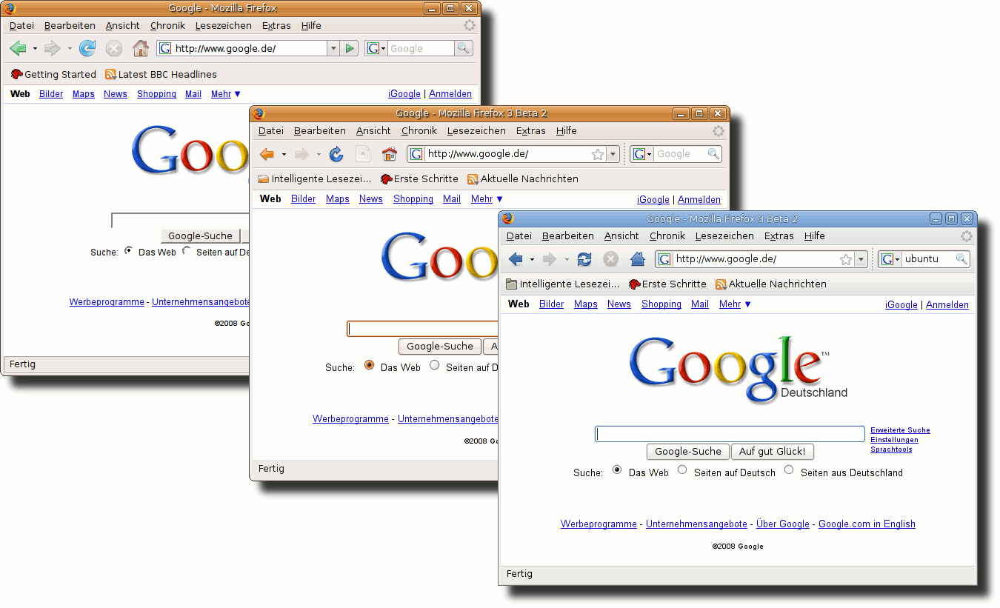
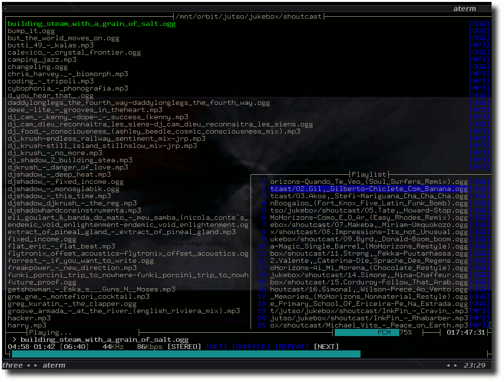

freiesMagazin Februar 2008
Topthemen dieser Ausgabe
Micropolis - Wir bauen uns eine Stadt
Wer wäre nicht gern Bürgermeister seiner eigenen Stadt? Electronic Arts macht dies nun möglich, indem es die Quellen für das bekannte Aufbauspiel Sim City unter einer freien Lizenz zur Verfügung stellt. Aufgrund von Namenskonflikten heißt das Spiel jetzt Micropolis, spielt sich aber fast genauso wie der Klassiker von 1989. Der Artikel beschreibt die Installation und Einrichtung des beliebten Spiels. (weiterlesen)
Mozilla Firefox 3 - The next Generation
Nach fast anderthalb Jahren Entwicklungszeit ist es bald soweit. Die nächste Generation des beliebten Internetbrowsers Mozilla Firefox steht vor der Tür und Version 3 soll Anfang 2008 freigeben werden. Ein genauer Termin wurde bisher jedoch noch nicht genannt. Aktuell kann man Firefox Beta 2 herunterladen und austesten. Es kann also nicht mehr lange dauern, bis man das endgültige Produkt in den Händen hält. Wir vergleichen Firefox 2 mit Firefox 3 und stellen die neuen Funktionen vor. (weiterlesen)
Inhalt
Nachrichten
OLPC-Projekt in der Krise?
Neues aus der Welt der Mobilgeräte
Neue Linux-Notebooks auf dem Markt
Neue Versionen verschiedener Linux-Distributionen
Probleme bei Gentoo
KDE 4.0 mit verändertem Releasezyklus erschienen
RPM-Package-Manager 5 erschienen
OpenProj 1.0 erschienen
Nokia übernimmt Trolltech
Into the Sun
Bauhelfer für RHEL
Endspurt für Microsofts OOXML
Intel stellt Grafikchip-Dokumentationen zur Verfügung
Buchautor Coelho gibt seine Werke frei
Anleitungen
Standbyfunktion von Seagate-Festplatten deaktivieren
getlibs - 32-bit-Programme in einem 64-bit-Ubuntu nutzen
Software
Micropolis - Wir bauen uns eine Stadt
Mozilla Firefox 3 - The next Generation
HardInfo - Hardwareinformationen anzeigen
MOC'n'Roll: audiophil mit der Konsole
Linux allgemein
Hinter der Bühne: Interview mit Damian Pietras
Veranstaltungskalender
Interna
Editorial
Leserbriefe
Konventionen
Vorschau
Impressum
Soweit nicht anders angegeben, stehen alle Artikel und Beiträge in freiesMagazin unter der GNU-Lizenz für freie Dokumentation (FDL). Das Copyright liegt beim jeweiligen Autor. freiesMagazin unterliegt als Gesamtwerk ebenso der GNU-Lizenz für freie Dokumentation (FDL) mit Ausnahme von Beiträgen, die unter einer anderen Lizenz hierin veröffentlicht werden. Das Copyright liegt bei Eva Drud. Es wird die Erlaubnis gewährt, das Werk/die Werke (ohne unveränderliche Abschnitte, ohne vordere und ohne hintere Umschlagtexte) unter den Bestimmungen der GNU Free Documentation License, Version 1.2 oder jeder späteren Version, veröffentlicht von der Free Software Foundation, zu kopieren, zu verteilen und/oder zu modifizieren. Die xkcd-Comics stehen separat unter der Creative Commons-Lizenz CC-BY-NC. Das Copyright liegt bei Randall Munroe.
Editorial
Liebe Leserin, lieber Leser! Letzten Monat (Link) haben wir erstmals unsere Titelseite eingeführt und diesen Monat bereits etwas daran verändert - und hoffentlich auch verbessert. Wir danken an dieser Stelle Arne Weinberg (von dem auch schon das freiesMagazin-Logo stammt) für seine Ideen und Anregungen für die neue Titelseite. Die Idee hinter der Umgestaltung war, in etwa das Design unserer Webseite zu übernehmen, sodass der Wiedererkennungswert höher ist. Wie gefällt Ihnen das neue Design der Titelseite? Wir freuen uns über reichlich Rückmeldungen per E-Mail an
| D. Wagenführ | E. Drud |
ftp://ftp.freiesmagazin.de/2008/freiesMagazin-2008-01.pdf
http://www.freiesmagazin.de/20080129-bilder-im-html-format
Leserbriefe
Für Leserbriefe steht unsere E-Mailadresse
An dieser Stelle möchten wir alle Leser ausdrücklich ermuntern, uns auch zu schreiben, was nicht so gut gefällt. Wir bekommen sehr viel Lob (was uns natürlich freut), aber nur durch Kritik können wir uns verbessern.
Seagate-Festplatten
Vielen Dank für Euer tolles Magazin. Aber der Artikel ,,Neue Seagate-Festplatten sind linuxunfreundlich'' enthält einen Fehler. Es ist sehr wohl möglich, auch von Linux aus die Sleep-Funktion der Festplatte abzuschalten (Link).
Oliver Hermanni freiesMagazin: Vielen Dank für diesen hilfreichen Hinweis! Wir haben die Anleitung getestet und sie ist wirklich für jeden Nutzer leicht umzusetzen. Durch das Programm sdparm kann man den Standby-Status der Festplatte abfragen und auch abschalten. Damit sind die Free-Agent-Festplatten von Seagate auch ohne ein vorhandenes Windows-System für reine ,,Linuxer'' ohne Einschränkungen benutzbar. Einen kurzen Artikel dazu findet man dort (Link). Mobile Ausgabe
Vielen Dank für eure Arbeit und speziell für die mobile Ausgabe für den Plucker. Da erwacht mein guter alter Palm zu neuem Leben. ;-)
Erik (Kommentar (Link)) Super! Vielen Dank dafür! Endlich kann ich das fM auch auf meinem Handy lesen! :)
dusk (Kommentar (Link)) Was mir für den Anfang schon mal fehlt ist ein tippfreundlicher Shortcut auf die jeweils aktuelle Ausgabe, bisher muss man dafür http://freiesmagazin.de/mobil/freiesMag azin-2008-01.html eintippen. Wie wäre es denn mit http://m.freiesmagazin.de - und dann immer auf die aktuelle Ausgabe verlinken oder gleich eine eigene mobile Startseite bauen? Tipps dafür gibts im pocketWeblog. ;)
Benji Wiebe (Kommentar (Link)) freiesMagazin: Vielen Dank für die positive Resonanz auf das mobile Format. Ingesamt gab es aber noch sehr wenige Downloads der Version. Wir werden das Projekt aber weiterführen, in der Hoffnung, dass es mehr Leser mit mobilen Geräten gibt. Die Idee einer kürzeren Adresse gefällt uns sehr gut, wir werden daher ab sofort die jeweils aktuelle Ausgabe unter der kürzeren Adresse http://freiesmagazin.de/mobil/ bereitstellen. Mobile HTML-Ausgabe mit Bildern
Die HTML-Ausgabe sieht gut auf meinem Treo aus. ;-) Spart Euch für die mobile Ausgabe die Bilder. Wenn Ihr mit ,,mobile Geräte'' Geräte mit Auflösung kleiner 320 Pixel meint, stören IMHO die Bilder nur. Text ist da voll ausreichend, lädt auch noch schneller. Es gibt auch noch Geräte, die nur GPRS können.
Unki (Kommentar (Link)) Ich würde vorschlagen, ihr handhabt die Einbindung von Bildern wie folgt: Ihr bindet Bilder nicht mittels IMG-Tag ein, sondern via CSS. Dabei macht Ihr Euch die Möglichkeit zunutze, abhängig vom Ausgabemedium ein anderes CSS-Stylesheet einzubinden.
Das Ganze ist natürlich mit etwas Mehraufwand verbunden. Es müssten Bilder in zwei Größen bereitgestellt werden, einmal für Handhelds und einmal für normale Browser. Weiterhin müssten alle Bilder mit einem DIV-Tag eingebunden werden, dem als CSS-Eigenschaft ,,background-image'' der URL zum anzuzeigenden Bild übergeben wird.
Am einfachsten lässt sich das wohl umsetzen, indem man für die Einbindung von Bildern eine kleine PHP-Funktion schreibt. Wenn nun ein Nutzer mit einem mobilen Gerät eure Website aufruft, so werden ihm Bilder in einem kleineren Format angezeigt als wenn er mit einem ,,normalen'' Browser unterwegs wäre.
Ansonsten habe ich persönlich bei meinem Opera Mini auf einem Nokia N73 die Anzeige von Bildern generell deaktiviert, kann aber bei Bedarf explizit ein Bild nachladen lassen, wenn ich es sehen will. Und dann bin ich natürlich froh, wenn das Bild eine Dateigröße von maximal 50kb hat.
Noch ein Tipp: Im Opera Browser kann man die Anzeige auf einem Handheld simulieren Shift+F11 und so die Darstellung seiner Website auf einem PDA o.ä. testen.
Florian Auer freiesMagazin: Vielen Dank für den Tipp mit dem ,,Mobil-Modus'' vom Opera - das ist super, so können wir die Darstellung viel besser testen.
Der Mehraufwand für eine Änderung aller Bilder ist leider enorm. Zusätzlich ist es fraglich, wie viel man auf den Screenshots nach einer Skalierung überhaupt noch erkennen kann. Wir haben uns entschieden, zwei Versionen anzubieten: Die herkömmliche ohne Bilder und eine Version mit Bildern in Originalgröße. So kann jeder die wählen, die ihm am meisten zusagt. Neues Design
Ihr bittet in Ausgabe 01/2008 im Editorial um Kommentare zum neuen Design. Nicht alles was neu ist, muss schlecht sein, jedoch stellte ich soeben leider fest, dass das neue Design - insbesondere die geänderte Schrift und die Rot/Blaue Linie unter den Überschriften - mir ganz und gar nicht gefallen. Das neue Logo ist nett, passt gut. Die Idee mit der Titelseite ist ja ganz nett, das Layout passt aber nicht zum Rest.
Bei Seite 2 und 3 ist die Seitenzahl und das freiesMagazin-Logo unten links nicht auf gleicher Höhe. Die Farbintensität des kleinen Logos unten links wechselt auf vielen Seiten (vielleicht habe nur ich dieses Problem?!). Auf Seite 27 ist euch die letzte Zeile der ersten Spalte anscheinend verrutscht.
Das alte Layout (wie in 11/2007) fand ich sehr gut und deutlich übersichtlicher.
Ich weiss, dass es sich um ein Non-Profit Projekt handelt und viele Leute viele Stunden hierfür opfern. In Anerkennung dessen bitte ich Euch meine Kritik nicht falsch zu verstehen! Vielleicht gefällt das neue Design nun anderen Lesern besser...
Der Inhalt ist - wie immer - gut und ich bin seit vielen Ausgaben begeisterter Leser. Daher nochmal: Vielen Dank für freiesMagazin.
Patrick Althoff freiesMagazin: Vielen Dank für die Kritik, aber natürlich auch für das Lob am Ende. Wegen der Schrift: Uns ist aufgefallen, dass es im Internet kaum eine Seite gibt, die eine Serifenschrift nutzt, weil serifenlose Schriften sich besser lesen lassen. Das Magazin ist dafür gedacht, dass es am Bildschirm gelesen wird, daher fanden wir diesen Wechsel ,,augenschonender''. Die orange-schattierte Linie gab es bereits im November im Magazin. Und davor war sie nur orange. Eine Linie ist da aber jedenfalls schon länger und es ist keine Neuerung. Und was gefällt Ihnen denn an der Titelseite nicht? In wie weit passt sie nicht zum restlichen Layout? Und was meinen die anderen Leser dazu? Schreiben Sie uns doch Ihre Meinung an
Danke auch für den Hinweis mit der verrutschten Seitenzahl. Der Fehler wurde behoben - wie man diesen Monat sieht. ;) Die Farbintensität des Schriftzugs kann aber nicht wechseln, da dieser automatisch generiert wird und immer gleich ist. Venezuela - again
Den beiden Leserbriefen in der Januar-2008-Ausgabe kann ich nur zustimmen. Die unkritische Berichterstattung über ein autoritäres Regime, nur weil es Open-Source-Software fördert, ist auch aus meiner Sicht mehr als bedenklich. Es pervertiert geradezu die Idee der Freiheit, die sich wohl nicht nur auf den Einsatz von Software beschränken lässt.
Sebastian Swiderski Ich habe mit Interesse den Artikel ,,Freie Software per Dekret'' in der Dezemberausgabe gelesen und war erfreut, dass Sie über diese einzigartige Entwicklung in Venezuela berichten. Die in der Januarausgabe veröffentlichten Leserbriefe, welche Kritik an dem Artikel übten, und Ihre Stellungnahme dazu motivieren mich zu einer Stellungnahme.
Die Forderung, keine politischen Artikel zu veröffentlichen und Ihre geäußerte Bereitschaft dazu (,,Sollten solche Berichte als zu politisch aufgefasst werden, müssen wir die Konsequenzen ziehen und werden in Zukunft nicht mehr über solche Dinge berichten.,,), lässt sich nicht umsetzen. Das Eigentumsrecht und die Informationsfreiheit sind die entscheidenden politischen Themen unserer Zeit.
Die bestehende Nichtbeachtung bis Zensur dieser Themen in der proprietären Presse ist Existenzgrundlage Ihres Magazins (,,freies-magazin''). Ich würde es bedauern, wenn Sie sich dieser Existenzgrundlage berauben.
Bernhard Kratz freiesMagazin: Danke für Ihre beiden Reaktionen. Wie Sie sehen, polarisiert das Thema und wir können es wahrscheinlich nicht allen Lesern recht machen. Wie wir letzten Monat schrieben, wollen wir Themen, zu denen uns eine einseitige politische Berichterstattung vorgeworfen werden könnte, nicht mehr aufgreifen. Dies hat aber nicht zwingend etwas mit Nichtbeachtung oder Zensur zu tun. freiesMagazin beschäftigt sich mit Themen rund um Linux und Open Source. Politische Artikel haben hier keinen Platz. Lob
Das neue Logo ist wirklich sehr gelungen! Und insgesamt ein ganz ganz großes Lob!
M. Kohlhase Vielen Dank an dieser Stelle für dieses tolle Magazin. Ich habe bisher absolut nichts daran auszusetzen und bitte Euch einfach, mit Eurer guten Arbeit weiterzumachen.
M. Junker (Kommentar (Link)) Ich bin zufällig über Ihre Seite auf Ihr Magazin aufmerksam geworden. Professionell aufgemacht, informativ, witzig und aktuell - und kostenlos. Herzlichen Glückwunsch!
Schmunzeln musste ich über den Satz in Ihrem Impressum: ,,Wenn Sie freiesMagazin ausdrucken möchten, dann denken Sie bitte an die Umwelt und drucken Sie nur im Notfall. Die Bäume werden es Ihnen danken. ;-)'' Nun, aber genau das macht es doch aus. In der Badewanne liegend, würde doch kaum jemand seinen Notebook bemühen ... News - selbst in deutscher Sprache - gib es doch mittlerweile zu Hauf im Internet. ;)
However, ich habe mich bei Ihrem RSS-Feed angemeldet und warte gespannt die nächste Ausgabe ab!
Hans Novak freiesMagazin: Vielen Dank für die Leserbriefe, die so viel Lob enthalten! :) Das Bedürfnis nach einem Vollbad mit spannender Lektüre legen wir einfach großzügig auch als Notfall aus. ;) Schön, dass Ihnen freiesMagazin so gut gefällt! Links
http://www.cgkreality.com/2007/11/27/seagate-freeagent-idle-under-linux/
http://www.freiesmagazin.de/
Die Redaktion behält sich vor, Leserbriefe gegebenenfalls zu kürzen.
OLPC-Projekt in der Krise?
Man könnte meinen, das ,,One Laptop Per Child''-Projekt (Link), welches Kindern in Dritte-Welt-Ländern preiswert oder kostenlos Notebooks zur Verfügung stellen will, steht unter keinem guten Stern. Sollte das Gerät zuerst als ,,100-Dollar-Laptop'' Geschichte machen, wurden es am Ende fast 200 Dollar. Zusätzlich startete die Produktion verspätet, da die Nachfrage sehr gering war (Link). Und als wäre das nicht genug, startete Asus mit dem EeePC einen direkten Angriff auf das Billig-Notebook, auch wenn dessen Einsatzzweck eher bei neuen Computernutzern in den Industrieländern liegt (Link).
Der OLPC-Laptop.
Bild © Fuse-Project, CC-BY-SA 2.5
Neben Asus' EeePC hat auch Intel mit dem Classmate-PC ein weiteres Konkurrenz-Produkt auf dem Markt, was letzten Monat für viel Gesprächsstoff sorgte, da Intel auch Mitglied beim OLPC-Projekt war. OLPC-Chef Negroponte wollte Intel daher dazu veranlassen, jede Mitarbeit an Konkurrenzprodukten einzustellen. Intel hat sich daraufhin komplett von dem Projekt verabschiedet (Link). Der Laptop ist damit der einzige dieser Art, der mit einer AMD-CPU daherkommt. Laut Negroponte hat Intel das OLPC-Projekt aber nicht aus eigenem Antrieb verlassen, sondern wurde rausgeschmissen. Angeblich führten zum einen Differenzen bei der Vermarktungsstrategie zu Problemen und zum anderen soll Intel den OLPC-Laptop in potentiellen Abnehmerländern angeschwärzt haben (Link). Immerhin soll aber die in Nordamerika gestartete Aktion ,,Give One Get One'' ein Erfolg gewesen sein (Link). Da das Interesse am OLPC-Laptop auch in Industrieländern groß war, konnte man bei der Aktion zwei Geräte kaufen, von denen man eins erhielt und das andere zum Einsatz in Afrika verschickt wurde. So wurden in den letzten anderthalb Monaten von 2007 35 Million US-Dollar eingenommen. Scheinbar läuft aber nicht alles so glatt, denn einige Kunden in den USA warten nach 6 Wochen immer noch auf ihren Laptop (Link). Auch für Europa überlegt man, ob diese Kampagne dem OLPC-Projekt zu mehr Erfolg verhelfen könnte (Link). Für etwas Verwirrung sorgte letzten Monat auch noch einmal OLPC-Chef Negroponte, als er in einem Gespräch sagte, dass der OLPC-Laptop neben dem Linux-System Xandros auch mit einer angepassten Windows-Version im Dual-Boot erscheinen soll (Link). Keine 24 Stunden später dementierte das OLPC-Projekt aber die Aussagen, da es sich um ein Missverständnis handelte (Link). Microsoft arbeitet zwar an einem Windows-XO für den Laptop, es wird aber keine Dual-Boot-Version geben. Durch eine Wiederherstellungsfunktion in Windows soll man den Laptop schnell wieder auf Linux umstellen können. (dwa) Links
http://www.laptop.org/index.de.html
http://www.pro-linux.de/news/2007/11948.html
http://www.silicon.de/enid/client_server_host/30848
http://www.silicon.de/enid/linux/32530
http://www.heise.de/open/news/meldung/101323
http://www.itwire.com/content/view/15998/53/
http://www.linuxworld.com/news/2008/012508-us-olpc-recipients-irate-over.html
http://www.linuxworld.com/news/2008/010708-olpc-considering-give-one-get.html
http://www.golem.de/0801/56942.html
http://www.golem.de/0801/56970.html
Neues aus der Welt der Mobilgeräte
Letzten Monat häuften sich Meldungen über Mobilgeräte, auf denen Linux läuft. Dies zeigt, dass Linux für Ultra-Mobil-PCs (UMPC) und Mobile Internet Devices (MID) sehr beliebt ist. Den Anfang machte die Ankündigung der Firma Tsinghua Tongfang (THTF) auf der Consumer Electronics Show (CES) in Las Vegas, die im Laufe dieses Jahres einen M1-UMPC namens ,,Lime-PC'' (Link) veröffentlichen will. Der mit einer Abmessung von gerade einmal 110mm x 58mm x 15.9mm sehr kleine PC läuft mit einem Prozessor der Firma Freescale und bietet USB, WiFi und Bluetooth (Link). Dazu ist eine 16-GByte-Flash-Speicherkarte verbaut, auf der die Daten gespeichert werden können. Über einen Touchscreen kommuniziert man mit dem Lime-PC. Als Betriebssystem kommt ein Debian-Derivat namens LimeOS zum Einsatz, welches von LimeFree-OS (Link) abgeleitet wurde. Ebenfalls auf der CES hat E-Lead ihren Noahpad (Link) vorgestellt, mit dem vor allem vom Asus EeePC Marktanteile abgegriffen werden sollen. Das Herzstück besteht aus einem Via C7-Prozessor mit 1 GHz, der zusammen mit 512 MB DDR2-Speicher das Innenleben bildet (Link). Den Bildschirm füllt ein 7-Zoll-TFT-Display, und auf einer internen 30-GByte-Festplatte werden die Daten gespeichert. Als Betriebssystem kommt Ubuntu 7.10 ,,Gutsy Gibbon'' und Windows XP Compatible zum Einsatz. Im MID-Umfeld hat Lenovo ein auf der von Intel entwickelten Menlow-Plattform basierendes Gerät vorgestellt, das 2008 auf den chinesischen Markt kommen soll (Link). Über ein 4,8-Zoll-Touchscreen und eine Mobiltelefon-artige Tastatur kann der Benutzer mit dem Linux-System kommunizieren. Neben einer Speicherkarte von 4 oder 8 GByte ist auch WiFi und Bluetooth enthalten. Im Mobiltelefonmarkt gibt es ebenfalls Neuigkeiten, denn die FIC-Tochter OpenMoko hat den Nachfolger des Neo 1973 namens ,,FreeRunner'' vorgestellt (Link). Das Neo 1973 war das erste freie Mobiltelefon auf dem Markt, da es komplett mit freier Software läuft, dessen Quelltext man anschauen und selbst verändern darf. Wo das Neo 1973 noch speziell für Entwickler interessant war, zielt OpenMoko mit dem FreeRunner nun auf den Massenmarkt ab. Neben Tri-Band-Funktionalität bietet das Gerät auch WLAN-Funktionen. Auch die Firma Azingo will Mitte Februar 2008 ihre gleichnamige Mobiltelefon-Plattform vorstellen, die sich dabei an den Spezifikationen der LiMo-Foundation orientiert. Neben einem Linux-Kernel wird es natürlich Anwendungsprogramme wie Webbrowser oder Media-Player geben, aber auch ein Software Development Kit, so dass eigene Erweiterungen geschrieben werden können. Die Bedienoberfläche soll anpassbar sein und auch eine virtueller Tastatur für das Touchscreen bereitstellen (Link). Ziemlich interessant ist die Entwicklung des OpenPandora.org-Projekts (Link). Die unter Linux laufende Konsole GP2X (und im Oktober 2007 vorgestelle GP2X-F200) erhält einen Nachfolger namens Pandora. Das 4,3-Zoll-große Display zeigt ein Bild auf 800x480 Bildpunkten und über eine QWERTY-Tastatur kann man Eingaben tätigen. Daneben gibt es natürlich noch diverse Knöpfe, um zu spielen. Pandora ist nicht als eigene Spielekonsole ausgelegt, sondern als Emulator für PlayStation-1- und Nintendo-64-Spiele. Das Gerät soll ab März/April für 286 Euro erhältlich sein (Link). (dwa) Links
http://www.limepc.com/
http://www.linux-magazin.de/news/linux_powered_winziger_pc_aus_china
http://limefree.org/
http://www.noahpad.com/
http://www.pro-linux.de/news/2008/12180.html
http://www.linux-magazin.de/news/mini_surfstation_mit_linux_von_lenovo
http://www.golem.de/0801/56794.html
http://www.golem.de/0801/57378.html
http://openpandora.org/
http://www.pro-linux.de/news/2008/12283.html
Neue Linux-Notebooks auf dem Markt
Immer mehr Notebook-Hersteller bieten ihre Geräte auch mit einem Linux-Betriebssystem an. Den großflächigen Anfang hatte Dell im letzten Jahr gemacht, als sie ein mit Ubuntu vorinstalliertes System in den USA anboten. Mitte des letzten Jahres waren die Notebooks dann auch in Deutschland, Frankreich und Großbritannien erhältlich. Zielte das Inspiron 6400 auf Standardanwender ab, werden mit dem neuen XPS M1330 eher die anspruchsvollen Benutzer angesprochen, die auf viel Leistung setzen. Wieder mit Ubuntu 7.10 vorinstalliert arbeitet ein Intel Core-2-Duo-Prozessor mit 1.66 GHz und zwischen 1 und 4 GByte RAM im Inneren des Geräts. Das Display misst eine Größe von 13.3 Zoll (1280x800 Pixel) und wird von einer Intel X3100- oder einer Nvidia-GeForce 8400M-Grafikkarte bedient (Link). Auch Acer setzt auf Ubuntu 7.10 und bietet mit dem Acer Aspire 4315 ein mit 700 $ günstiges Gerät an - leider derzeit nur in Neuseeland. Das 14.1-Zoll große Display (1280x800 Pixel) sorgt für das Bild und der Intel Celeron M540 mit 1.86 GHz für die Rechenleistung. Daten werden auf einer 80 GByte großen Festplatte gespeichert (Link). Lenovo (früher IBM) will ab diesem Monat seine Thinkpads T61 und R61 ebenfalls mit einem vorinstallierten Linux ausliefern. Zum Einsatz kommt das von Novell verbreitete Suse Linux Enterprise Desktop 10, welches auch proprietäre Software wie den RealPlayer oder den Macromedia Flash Player beinhaltet. Beide Geräte werden um die 950 Euro kosten. Das T61 läuft mit einer Intel Core 2 Duo-CPU mit 2.0 GHz, 1 GByte RAM und einer Intel X3100-Grafikkarte. Das 14.1-Zoll große LCD-Display liefert eine Auflösung von 1366x768 Pixeln (Link). (dwa) Links
http://www.pro-linux.de/news/2008/12241.html
http://www.notebookcheck.com/Newseintrag.54+M57e5c662e6d.0.html
http://www.linux-magazin.de/news/lenovo_thinkpads_mit_linux
Neue Versionen verschiedener Linux-Distributionen erschienen
Es gab letzten Monat viele neue Versionen der verschiedensten Linux-Distributionen. Debian
Für Debian 3.1 ,,Sarge'' ist die siebte Fehlerkorrektur 3.1r7 erschienen. Neu ist vor allem, dass erstmals eine als ,,oldstable'' deklarierte Debian-Version noch Sicherheitsupdates und Fehlerkorrekturen erhält (Link). Debian 3.1 wurde im April 2007 von Debian 4.0 ,,Etch'' abgelöst, für welches ebenso eine neue Version 4.0r2 erschienen ist (Link). Beide Versionen wurden auch auf den Downloadservern auf den neuesten Stand gebracht. GoboLinux
GoboLinux ist in der Version 014 erschienen. Neben zahlreicher Updates ist unter anderem auch das ,,neue'' KDE 3.5.8 und X.org 7.2 enthalten. Die Besonderheit an der Distribution ist die andersartige Verzeichnisstruktur. Bekannte Zweige wie /etc, /opt oder /usr sind versteckt und für den Benutzer nicht sichtbar. Stattdessen werden Verzeichnisse wie /Depot, /Files oder /Programs benutzt. Ebenso werden Programme nur in ein Verzeichnis installiert und verteilen sich nicht über mehrere (Link), wie man dies bei herkömmlichen Linux-Systemen gewohnt ist. Linux Mint
Von Linux Mint 4.0 sind drei neue Versionen erschienen. Die Beta-Version von Linux Mint 4.0 ,,Fluxbox'' zielt vor allem auf etwas schwächere Rechner ab, da Fluxbox weniger Ressourcen verbraucht als die GNOME-Umgebung. Als zweites wurde der zweite Release-Candiate der Variante ,,KDE'' zur Verfügung gestellt (Link). Die dritte komplett neue Version ist Linux Mint 4.0 ,,Debian'', dass wie der Name sagt auf Debian basiert, aber nur in einer Alpha-Version vorliegt. Linux Mint ,,Debian'' ist laut Aussage der Entwickler nur ein Vorzeigeprojekt, damit jeder sieht, wie Linux Mint ohne Ubuntu-Basis aussehe (Link). Mandriva
Anfang Januar ist die zweite Alpha-Version des im April kommenden Mandriva 2008 Spring (2008.1) erschienen und wurde Ende Januar dann von der ersten Beta-Version eingeholt. Es bringt neben diversen Programmupdates auch die neuesten Versionen von KDE 4.0 und Kernel 2.6.24-rc8 mit. Für LATEX-Fans wichtig: Das in der Alpha 2 durch TeX Live ersetzte teTeX wurde in der Beta 1 wieder als Standard-TeX-Distribution integriert. Der Veröffentlichungszyklus wurde wie bei Ubuntu auf ein halbes Jahr geändert (Link). Mandriva arbeitet inzwischen auch mit den Entwicklern der asiatischen Distribution TurboLinux zusammen. Man erhofft sich so ein schnelleres Vorankommen und eine bessere Hardwareunterstützung (Link). openSUSE
Der Zeitplan für openSUSE 11 steht und so soll Version 11.0 am 19. Juni 2008 veröffentlicht werden. Aktuell ist die erste Alpha-Version erhältlich (Link). Neben KDE 4.0 und PulseAudio wurde vor allem der Installer grafisch stark überarbeitet (Link). Des Weiteren ist mit openSUSE-Education 1.0 ein Add-On erschienen, welches openSUSE 10.2 mit viel Lernsoftware für Schule und Ausbildung erweitert. Man will damit auf das gestiegene Interesse nach Linux in Schulen eingehen (Link). ReactOS
ReactOS bezeichnet sich selbst als Windows-Alternative und ist mit etwas Verspätung in Version 0.3.4 erschienen. Das Ziel der Distribution ist es, vollkommen kompatibel zum Microsoft-Betriebssystem Windows zu sein. Auf der Projektseite gibt es Downloads in Form einer Installations-CD, einer Live-CD und VM-Images (Link). Ubuntu
Für Ubuntu 8.04 LTS ,,Hardy Heron'' ist die dritte und vierte Alpha-Version erschienen. Die dritte Entwicklerversion bringt X.org 7.3, den neuen Linux-Kernel 2.6.24rc6, PulseAudio und das von Red Hat entwickelte PolicyKit mit. Weiterhin wird KDE 3.5 unterstützt, KDE 4.0 kann aber aus den Softwarequellen nachinstalliert werden (Link). In der Alpha 4 haben vor allem viele neue Programme Einzug gefunden (Link). Daneben hat Canonical auch ein zweites Pointrelease für Ubuntu 6.06 LTS ,,Dapper Drake'' veröffentlicht, das hauptsächlich für Firmen interessant sein wird. Man will damit vor allem die Wichtigkeit der Long-Term-Support-Version unterstreichen (Link). Wichtiger Hinweis: Alpha- oder Beta-Versionen sind nicht für den täglichen Einsatz, sondern nur für Entwickler und Tester gedacht! (dwa)
Links
http://www.pro-linux.de/news/2008/12156.html
http://www.golem.de/0712/56724.html
http://www.pro-linux.de/news/2008/12164.html
http://www.tecchannel.de/pc_mobile/news/1744721/index.html
http://www.tecchannel.de/pc_mobile/news/1742864/index.html
http://wiki.mandriva.com/en/2008.1_Beta_1
http://www.golem.de/0801/57065.html
http://www.pro-linux.de/news/2008/12184.html
http://www.phoronix.com/scan.php?page=article
http://www.pro-linux.de/news/2008/12228.html
http://www.golem.de/0801/57175.html
http://ubuntuusers.de/ikhaya/879/
http://ubuntuusers.de/ikhaya/896/
http://www.deesaster.org/blog/archives/201
Probleme bei Gentoo
Beim Gentoo-Projekt ging es in der letzten Zeit ein wenig drunter und drüber. Der Gründer des Projekts, Daniel Robbins, hatte zwischenzeitlich sogar angeboten, seine Funktion als Stiftungspräsident wieder aufzunehmen. Neben kleineren Problemen, die wohl jedes Freiwilligenprojekt einmal durchmacht, gab es auch ein größeres: Die Gentoo-Stiftung schien zunächst die Anerkennung als gemeinnützige Organisation verloren zu haben, weil laut dem Verantwortlichen Grant Goodyear (Link) zu spät bemerkt wurde, dass die zur Verlängerung notwendigen Unterlagen (einschließlich eines überfälligen Berichts) verloren gingen (Link) (Link). Inzwischen sind die Unterlagen bereits wieder auf dem Weg zu den zuständigen Behörden und der uneingeschränkten Anerkennung als Stiftung steht nichts mehr im Wege (Link). Da die meisten Stiftungsmitarbeiter inaktiv sind, haben die verbliebenen sich nun für das Durchführen von Neuwahlen entschieden. Das Angebot von Gentoo-Gründer Robbins wurde aber abgelehnt, da dieser eine Art diktatorische Leitung wollte, wohingehen sich die Gentoo-Entwickler für ein demokratisches System entschieden haben. Robbins will sich daher in Zukunft komplett vom Gentoo-Projekt lossagen (Link). Obwohl Gentoo 2007.1 nicht veröffentlicht wurde, meinen die Entwickler, dass die rein rechtlichen Probleme damit nichts zu tun hätten. Am 17. März soll stattdessen Version 2008.0 als Ersatz erscheinen (Link). (edr) Links
http://www.linux-magazin.de/news/gentoo_stiftung_der_letzte_laesst_das_licht_an
http://www.pro-linux.de/news/2008/12196.html
http://blog.funtoo.org/2008/01/and-it-gets-worse.html
http://blog.funtoo.org/2008/02/refocus.html
http://www.pro-linux.de/news/2008/12284.html
KDE 4.0 mit verändertem Releasezyklus erschienen
Es hat lange gedauert, aber nun ist KDE 4.0 veröffentlicht. Für dieses Release wurden viele Bereiche der K Desktopumgebung neuentwickelt, sodass selbst einige KDE-Entwickler davor warnen (Link), als Nutzer von KDE 3.5 sofort umzusteigen. Diese Warnung wird auch durch die für Februar angesetzte Veröffentlichung von KDE 3.5.9 (Link) unterstrichen - KDE 3.5 wird weiterhin unterstützt, ein übereilter Wechsel ist also nicht notwendig. Bereits im Juni soll die Folgeversion KDE 4.1 veröffentlicht werden, KDE passt sich hiermit an die bei GNOME übliche Praxis an, alle 6 Monate eine neue Version herauszugeben. Bugfix-Releases soll es sogar monatlich geben. Wer sich einen Eindruck vom neuen KDE verschaffen will, der kann dies in zwei Artikeln des LinuxMagazin (Link) (Link), bei golem.de (Link) und im ubuntuusers-Wiki (Link) tun. Die Änderungen sind zum Teil auf den ersten Blick ersichtlich. Dazu gehört das neue Menü ,,Kickoff'', welches besonders ergonomisch sein soll. Außerdem bietet auch KDE Desktopeffekte wie echte Transparenz, allerdings ohne dafür auf Compiz Fusion zu setzen. Die Änderungen am System, die nicht sofort ins Auge fallen, sind unter anderem die Umstellung auf die neue Multimedia-API Phonon (Link) anstelle von aRts und der Einsatz der Hardware-API Solid (Link), mit der die Unterstützung von WLAN und weitere Funktionen, wie zum Beispiel der zum Energiesparen auf Laptops, verbessert wird. (edr) Links
http://sputniksblog.blogspot.com/2008/01/kde-warnt-nutzer-vor-der-nutzung-von.html
http://www.eweek.com/c/a/Linux-and-Open-Source/KDE-Sets-Roadmap-for-Future-Development/
http://www.linux-magazin.de/news/kde_4_ist_da
http://www.linux-magazin.de/heft_abo/ausgaben/2007/12/schoene_aussichten
http://www.golem.de/0801/56919.html
http://wiki.ubuntuusers.de/KDE4
http://phonon.kde.org/
http://solid.kde.org/
RPM-Package-Manager 5 erschienen
Neben APT ist RPM die zweite weitverbreitete Möglichkeit, Softwarepakete auf Linux-Systemen zu verwalten. Ursprünglich für Red Hat entwickelt, setzen nun auch andere Distributionen wie SUSE und Mandriva auf RPM. Ein Meilenstein dieser Version ist sicher die Möglichkeit, den RPM auf unterschiedlichen Plattformen einzusetzen. War dies früher eigentlich nur Linux, so kann der RPM unter BSD, Linux, Solaris, Mac OS X und Windows/Cygwin eingesetzt werden. Der Code wurde durchgesehen und gesäubert, sodass er nun mit allen großen C-Compilern wie GNU-GCC, Sun Studio und Intel C/C++ kompiliert werden kann. Opfer der Aufräumaktion wurde die Unterstützung für alte und überflüssige Formate wie RPMv3 und rpmrc-Dateien. Dafür wurden neue Funktionen wie die LZMA-Komprimierung hinzugefügt. Weitere Änderungen sind in der Pressemitteilung (Link) zur Veröffentlichung zu finden. (edr) Links
http://rpm5.org/pressrelease.php
http://ubuntuusers.de/ikhaya/870/
OpenProj 1.0 erschienen
Für die im privaten Bereich vielgenutzten Microsoft-Produkte Word, Excel, PowerPoint und Outlook/Outlook Express bieten Open-Source-Anwendungen wie OpenOffice.org gute Alternativen. Im Bereich der hauptsächlich professionell genutzen Programme zum Projektmanagement (beispielsweise Microsoft Project) gab es bisher weniger Möglichkeiten zur Auswahl (Link), die das MS-Project-Format sowohl lesen als auch schreiben konnten. Das jetzt in der Version 1.0 erschienene OpenProj ist als Java-Anwendung plattformunabhängig und als Paket für Windows, Linux/Unix und Mac OS X verfügbar (Link). Der Import von MS-Project-Dateien soll ebenso möglich sein wie die Erstellung sogenannter Gantt-Diagramme (Link). Es kann beim Betrieb oder Start des Programmes jedoch immer noch zu Fehlern kommen. (edr) Links
http://wiki.ubuntuusers.de/Projektmanagement
http://sourceforge.net/project/showfiles.php?group_id=199315
http://de.wikipedia.org/wiki/Gantt-Diagramm
http://www.heise.de/open/Freie-Projektmanagement-Software-OpenProj-entwaechst-Beta-Stadium-/news/meldung/101783

OpenProj-Hauptfenster.
Nokia übernimmt Trolltech
Der finnische Mobiltelefon-Hersteller Nokia, der derzeit insbesondere durch die beabsichtigte Schließung des Bochumer Werkes in den Schlagzeilen vertreten ist (Link), scheint die Gewinne (Link) des letzten Jahres im eigenen Sinne sinnvoll anlegen zu wollen. So wurde eine Vereinbarung über die Übernahme von Trolltech ASA durch Nokia gemeinsam bekannt gegeben (Link). Nokia zielt mit seiner Strategie auf die Entwicklung von plattformübergreifenden Anwendungen für die Geräte der eigenen Produktpalette. Trolltechs QT-Framework passt hervorragend in diese Pläne, da es die wichtigen Endgeräte bereits abdeckt. Qtopia dürfte auch ein Grund für die Offerte gewesen sein, da dies auf den Einsatz in mobilen Geräten zugeschnitten wurde. Nokia beabsichtigt, die Duallizensierung für QT beizubehalten und die Entwicklung weiterzuführen. Dies ist unter anderem für das KDE-Projekt von Bedeutung, da diese Umgebung zu großen Teilen auf den QT Biliotheken aufsetzt. (mme)
Links
http://www.heise.de/newsticker/meldung/101780
http://www.heise.de/newsticker/meldung/102374
http://www.nokia.com/A4136001?newsid=1185531
http://trolltech.com/company/newsroom/announcements/press.2008-01-28.4605718236
Into the Sun
Genau dorthin ist MySQL AB, das Unternehmen hinter der freien Datenbank MySQL, unterwegs, denn es wurde letzten Monat von Sun Microsystems übernommen. Die Übernahme ließ sich Sun immerhin eine Milliarde US-Dollar kosten, um in den Markt der Datenbanken einzusteigen (Link). Mit dem Erwerb des ,,M'' aus dem Akronym LAMP (Linux, Apache, MySQL, PHP) hat sich Sun in eine bedeutende Position im Webserver-Umfeld gebracht. MySQL stellt hier die wichtigste Basis für Datenbank-basierte Systeme dar. Doch auch in anderen Bereichen, in denen Sun aktiv ist, dürfte der Zukauf von Nutzen sein. So könnte eine gut skalierende Datenbank in den Bereichen des Grid Computing oder der Hochleistungsrechner das Produktportfolio ergänzen, jedoch gab es zu konkreten Plänen bislang noch keine offizielle Stellungnahme. Jonathan Schwartz, Chef von Sun Microsystems, versucht in seinem Blog (Link) die Vorzüge für MySQL herauszuheben. So verspricht er sich mehr Vertrauen der Unternehmer in MySQL, wenn nun ein großer Name dahinter steht und Unterstützung bietet. Zudem soll MySQL von den Verbindungen profitieren, die Sun zu anderen Herstellern, wie zum Beispiel IBM, pflegt. Nachdem MySQL AB bereits die Begehrlichkeiten seitens Oracle überstanden hat (Link), hätte es schlimmer kommen können. Immerhin nutzt Sun auch bei einigen anderen Projekten erfolgreich das Open-Source-Konzept. (mme) Links
http://www.sun.com/aboutsun/pr/2008-01/sunflash.20080116.1.xml
http://blogs.sun.com/jonathan/entry/winds_of_change_are_blowing
http://www.heise.de/newsticker/meldung/69705
Bauhelfer für RHEL
openSUSEs Build Service bietet nun auch die Möglichkeit, Pakete für Red Hat Enterprise Linux 5 und das darauf aufbauende freie CentOS 5 zu erstellen (Link). Schon länger steht dieser Dienst nicht nur für openSUSE selbst, sondern auch für Debian Etch und mehrere Ubuntu-Versionen zur Verfügung. Damit öffnet man sich hier weiteren Plattformen, um, so Novells Produktmanager Michael Löffler, die Verbreitung von Neuerungen über die Freie-Software-Gemeinde hinweg zu fördern (Link). Man wolle neue Ideen nicht ausschließen, nur weil sie einem anderen Projekt entstammen. Mit dem Build Service (Link) verfügt das openSUSE-Projekt über ein System, das angemeldeten Entwicklern das Paketieren ihrer Quelltexte zu installierbaren Softwarepaketen abnimmt. Hier wird eine Infrastruktur bereitgestellt, die das Kompilieren der Software, das Signieren mittels GPG-Schlüsseln und die Veröffentlichung vornimmt. Die Einrichtung und Steuerung erfolgt wahlweise über eine Weboberfläche oder ein Werkzeuge für die Kommandozeile. Launchpad verfügt mit den Personal Package Archives (PPA) (Link) über einen ähnlichen Dienst, der jedoch auf Ubuntu-Pakete beschränkt ist. (mme) Links
http://news.opensuse.org/2008/01/24/opensuse-build-service-expands-support-to-red-hat-and-centos/
http://www.novell.com/news/press/the-opensuse-build-service-expands-support-to-red-hat-and-centos/
https://build.opensuse.org/
https://launchpad.net/ubuntu/+ppas
Endspurt für Microsofts OOXML
Ende Februar ist es soweit: In Genf (Schweiz) trifft das ISO-Kommittee zusammen, um endgültig über Microsofts Dokumentenformat Office OpenXML als ISO-Standard abzustimmen. Die Wahl Anfang September ging bereits negativ für Microsoft aus, die einzelnen Länder konnten aber Kommentare zur Verbesserung einreichen. Es ergeben sich aber immer noch einige Fragen an Microsoft, von denen viele nicht beantwortet werden könnten (Link). Nach einer Analyse der Burton Group sei dies aber unwichtig, da sich OOXML sowieso in der Zukunft gegen das bereits von der ISO abgesegnete Open Document Format durchsetzen wird (Link). Scheinbar hat die Studie aber einige Argumentationslücken, auf die die ODF-Alliance mit einer neunseitigen Stellungnahme hinweist (Link). In der Zwischenzeit wurden zwei neue Verfahren von der EU gegen Microsoft aufgenommen. Das erste wurde vom Browserhersteller Opera initiiert, da der Internet Explorer sich nicht an Standards halte und daher auch die Konkurrenz zu Fehlerausbesserungen zwinge. Das zweite Verfahren betrifft OOXML, welches als nicht offen genug beschrieben wird, zumal der bei der ISO eingereichte Standard OOXML sehr von dem abweicht, was Microsoft in seinen eigenen Office-Programmen anbietet (Link). Davor warnt auch IBM-Mitarbeiter Bob Sutor, Vizepräsident für Standardisierung und Open Source bei IBM. Man solle aktuell noch nicht auf OOXML setzen, wenn man seine Dateien auch in Zukunft noch lesen wolle. OOXML sei noch kein ISO-Standard, sodass langfristig nicht klar ist, wie sich das Format entwickeln wird. Wie oben geschrieben weicht Microsoft in Office 2007 bereits jetzt schon von der bei der ISO eingereichten OOXML-Spezifikation ab (Link). Auch die ODF-Alliance spricht sich in einem zehnseitigem Schreiben gegen OOXML aus (Link). Ende des Monats holte Microsoft noch einmal zum Rundumschlag aus. Auf einer Pressekonferenz machten hochrangige Microsoft-Vertreter Werbung für OOXML. Angeblich sind ihre Kunden mit dem Open Document Format nicht zufrieden und wünschen sich eine Abwärtkompatibilität zu den alten MS-Office-Formaten. Interessanterweise ist dies aber eines der Hauptgründe, wieso OOXML im September 2007 kein ISO-Standard geworden ist, wie die zahlreichen Kommentare zeigen (Link). Zusätzlich beschuldigt man IBM eine Kampagne gegen OOXML geführt zu haben, so dass die ISO-Standardisierung nur allein aufgrund IBMs Handlungen behindert werde (Link). Nach der Ankündigung, dass die EU neue Verfahren gegen Microsoft einleiten wolle, hat Microsoft bekannt gegeben, dass sie zum einen die Spezifikationen zu den binären MS-Office-Formaten .doc, .xls und .ppt freigeben wollen, und zum anderen, dass sie ein Projekt bei SourceForge initiiert haben, welches die binären Formate in OOXML konvertieren soll (Link). Man kann nun gespannt sein, in wie weit sich diese Öffnung - wenn sie denn im wahren Sinn des Wortes eine ist - sich auf das Verfahren der EU und auf die OOXML-Abstimmung Ende Februar auswirken wird. (dwa) Links
http://www.fanaticattack.com/2008/ooxml-questions-microsoft-cannot-answer-in-geneva.html
http://www.heise.de/open/news/meldung/101838
http://www.heise.de/open/news/meldung/101965
http://www.consortiuminfo.org/standardsblog/article.php?story=20080114105017559
http://www.golem.de/0801/57222.html
http://www.linux-magazin.de/news/appell_der_odf_alliance_nein_zu_ooxml
http://www.silicon.de/enid/business_software/33215
http://www.golem.de/0801/57374.html
http://www.linux-magazin.de/news/microsoft_macht_office_dokumentformate_zugaenglicher
Intel stellt Grafikchip-Dokumentationen zur Verfügung
Intel ist bekannt dafür, dass es mit Linux-Entwicklern gut zusammenarbeitet. Die Intel-Grafikchips zählen zu den best unterstützten unter Linux. Nun stellt die Firma den Entwicklern auch die umfangreiche Dokumentation der Chipsätzen 965 Express und G35 Express unter einer Creative-Commons-Lizenz (Attribution-No Derivative Works 3.0 United States (Link)) zur Verfügung. Als Anlaufstelle soll die neu eingerichtete Seite ,,Linux Graphics Drivers from Intel'' (Link) dienen, auf der man die Dokumentation, Treiber und andere Downloads findet. (dwa) Links
http://creativecommons.org/licenses/by-nd/3.0/us/
http://intellinuxgraphics.org/
http://www.linux-magazin.de/news/grafikchipsaetze_intel_veroeffentlicht_dokumentation
Buchautor Coelho gibt seine Werke frei
Normalerweise setzen Musiker oder Autoren alles daran, dass ihre Rechte geschützt werden. Das heißt, dass niemand kostenlos an ihre Werke kommt. Der bekannte brasilianische Autor Paulo Coelho (Link) hat aber genau mit der kostenlosen Freigabe einiger seiner Bücher höhere Umsätze erzielen können. Vor allem sein Roman ,,Der Alchimist'' verkaufte sich in Russland danach wesentlich besser. Es ist wünschenswert, dass sich Coelhos Denken auch bei anderen Autoren durchsetzt. Wer Interesse hat, findet die eDonkey-Links für Bücher wie ,,Elf Minuten'' oder ,,Veronika beschließt zu sterben'' auf Coelhos eigener Piratenseite (Link). Ob sein Verlag über diese Aktion sonderlich glücklich ist, ist unbekannt. (dwa) Links
http://www.paulocoelhoblog.com
http://piratecoelho.wordpress.com
http://www.gulli.com/news/paulo-coelho-der-alchimist-2008-01-25
Standbyfunktion von Seagate-Festplatten unter Linux deaktivieren von Eva Drud
Letzten Monat (Link) haben wir darüber berichtet, dass es mit dem Standby-Verhalten der neuen Seagate-Festplatten Probleme unter Linux gibt. Es gab zwar damals schon einen Workaround, der aber leider nur unter Windows funktionierte. Einer unserer Leser hat uns nun darauf hingewiesen, dass es auch unter Linux eine Lösung (Link) gibt. Zunächst muss das Paket sdparm über die Paketverwaltung installiert werden. Das Paket ermöglicht die Anzeige und Bearbeitung der Parameter von SCSI-Geräten. (USB-Festplatten, SATA-Laufwerke und DVD/CD-Brenner werden als SCSI-Geräte betrachtet.) Anschließend muss man die Geräteadresse, die vom System an die Festplatte vergeben wurde, herausfinden. Dazu gibt es verschiedene Möglichkeiten, eine davon ist (bei angeschlossener und eingeschalteter Festplatte!) # lshw -C disk
Die Ausgabe sieht dann zum Beispiel folgendermaßen aus: *-disk description: SCSI Disk product: FreeAgent Pro vendor: Seagate physical id: 0.0.0 bus info: scsi@9:0.0.0
logical name: /dev/sde version: 400A serial: 5QG1PG2P size: 465GB capabilities: partitioned partitioned:dos configuration: ansiversion=4
Jetzt lässt man sich den Status des Laufwerks anzeigen (Die Bezeichnung sde muss dabei durch die eigene Laufwerksbezeichnung ersetzt werden.): # sdparm -a /dev/sde
/dev/sde: Seagate FreeAgentDesktop 400A Power condition mode page: IDLE 0 [cha: n, def: 0, sav: 0] STANDBY 1 [cha: y, def: 1, sav: 1] ICT 0 [cha: n, def: 0, sav: 0] SCT 9000 [cha: y, def:9000, sav: 9000]
Es interessiert an dieser Ausgabe eigentlich nur der ,,STANDBY''-Parameter. Diesen muss man nun löschen. Dies ist aber nur möglich, wenn sich das Laufwerk noch nicht im Standby-Zustand befindet. Mit dem Befehl # sdparm --clear=STANDBY --six /dev/sde
löscht man die Standby-Einstellung. Der Parameter --clear setzt dabei den Wert für ,,STANDBY'' auf 0, --six gibt den Zugriffsmodus für die ,,MODE SENSE''- und ,,MODE SELECT SCSI''-Befehle an. Ob der Befehl funktioniert hat, sieht man, indem man erneut # sdparm -a /dev/sde
eingibt. Es sollte etwas Ähnliches wie der folgende Text ausgegeben werden: /dev/sde: Seagate FreeAgentDesktop 400A Power condition mode page: IDLE 0 [cha: n, def: 0, sav: 0] STANDBY 0 [cha: n, def: 1, sav: 0] ICT 0 [cha: n, def: 0, sav: 0] SCT 9000 [cha: y, def:9000, sav: 9000]
Der STANDBY-Parameter ist jetzt deaktiviert, die Festplatte sollte sich nun nicht mehr länger in den Ruhezustand versetzen. Links
ftp://ftp.freiesmagazin.de/2008/freiesMagazin-2008-01.pdf
http://www.cgkreality.com/2007/11/27/seagate-freeagent-idle-under-linux/
getlibs - 32-bit-Programme in einem 64-bit-Ubuntu nutzen von Christoph Langner
Das Tool getlibs (Link) ist praktisch für die Benutzer eines 64-bit-Ubuntus. Manche Programme wie Skype oder Floola gibt es nicht in einer 64-bit-Variante. Daher muss man 32-bit-Bibliotheken von Hand nachinstallieren, was aufwändig und für Anfänger nicht zu machen ist. Daher ist getlibs eine gute Hilfe. Das Programm findet man im englischen Ubuntu-Forum ubuntuforums.org (Link). Aktuell ist die Version 2.0, die an diesen Beitrag (Link) angehängt ist. Zum Download muss man ein Konto auf ubuntuforums.org besitzen. Dabei sollte man jedoch beachten, dass der Autor den ersten Beitrag nicht aktualisiert, sodass die aktuelle Version immer in dem verlinkten Thread gesucht werden muss. Am Beispiel von Skype soll die Funktionsweise von getlibs erklärt werden. Skype installieren
Skype wird mittlerweile für verschiedene Linux Distributionen als Paket zum Download angeboten. Daher lädt man Skype für Ubuntu Linux von skype.com (Link) herunter. Solche deb-Pakete lassen sich in Ubuntu mit einem Doppelklick auf die Datei installieren. Allerdings würde sich hier das System weigern, diese Aktion auszuführen, da Skype eben nur für die 32-bit-Architektur verfügbar ist. Man muss die Paketverwaltung dazu zwingen, das Paket zu installieren. Dies geht in einem Terminal über # dpkg --force-architecture -i skype*.deb
Daraufhin wird das Paket installiert. Skype kann jedoch noch nicht starten, weil die zum Betrieb benötigten 32-bit-Bibliotheken noch nicht installiert sind. 32-bit-Bibliotheken installieren
Nun ruft man getlibs auf und gibt das auszuführende Programm als Parameter an. In diesem Fall natürlich das Binary von Skype. # getlibs /usr/bin/skype
Das Prinzip lässt sich auf jedes Programm übertragen. getlibs analysiert das Programm, lädt die 32-bit-Bibliotheken aus den Paketquellen und kopiert die Bibliotheken an die passenden Stellen. Links
http://ubuntuforums.org/showthread.php?t=474790
http://ubuntuforums.org/
http://ubuntuforums.org/showpost.php?p=3996324
http://www.skype.com/intl/en/download/skype/linux/choose
Micropolis - Wir bauen uns eine Stadt von Dominik Wagenführ
Wer wäre nicht gern Bürgermeister seiner eigenen Stadt? Electronic Arts macht dies nun möglich, indem es die Quellen für das bekannte Aufbauspiel Sim City unter einer freien Lizenz zur Verfügung stellt. Aufgrund von Namenskonflikten heißt das Spiel jetzt Micropolis, spielt sich aber fast genauso wie der Klassiker von 1989.
Startmenu von Micropolis.
Sim City (Link) von Maxis war eines der ersten Aufbauspiele für den PC. Für heutige Verhältnisse mit sehr einfacher Grafik konnte das Spiel dennoch sehr lange am Bildschirm fesseln. Um eine Stadt zu verwalten, muss man Häuser für neue Anwohner bauen, Einkaufsgebiete und Büros schaffen und natürlich die Industrie voranbringen. Das Ganze muss man natürlich geschickt verbinden, so dass sich die Bereiche gegenseitig nicht negativ beeinflussen. Wer will schon direkt neben einem Kohlekraftwerk wohnen? Für das One-Laptop-Per-Child-Projekt (Link) hat Electronic Arts, die Maxis inzwischen integriert haben, das Originalspiel von 1989 unter eine freie Lizenz gestellt. Mit der GPLv3 (Link) kann nun jeder das Spiel verbreiten oder gar auf der gleichen Codebasis weiterbauen. Einzig der geschützte Name ,,Sim City'' darf nicht dafür verwendet werden. Dies ist auch der Grund, wieso das Spiel nun ,,Micropolis'' genannt wurde, was der Originalname von Sim City während der Entwicklung war. Installation
Wer Ubuntu 7.10 benutzt, hat Glück, denn der kann ein fertiges deb-Paket bei GetDeb (Link) herunterladen und dieses einfach per Doppelklick installieren. Alle anderen müssen sich das Programm selbst kompilieren. Hierzu installiert man sich zuerst die benötigten Bibliotheken. Neben einem C-Compiler (am leichtesten über das Paket build-essentials zu erhalten) installiert man noch die Pakete
- libx11-dev
- libxpm-dev
- x11proto-xext-dev
- libxext-dev
Danach lädt man sich den Quellcode des Paketes micropolis-activity-source.tgz von der Downloadseite (Link) und entpackt dieses, so dass der Ordner micropolis-activity entsteht. Aufgrund einiger Probleme muss man die Software zuerst patchen. Das bedeutet, dass einige Fehler behoben werden müssen, was aber automatisch geschieht. Dazu lädt man sich den Patch micropolis_mac-osx.patch (Link) herunter und speichert ihn im gleichen Ordner, in dem micropolis-activity erstellt wurde. Danach bewegt man sich in einem Terminal in diesen Ordner und patcht das Spiel mittels $ patch -i micropolis_mac-osx. patch -p0
Nun kann man das Spiel auch schon kompilieren. Dazu geht man in den Ordner src und startet den Kompiliervorgang: $ cd micropolis-activity/src $ make $ make install $ cd ..
Hinweis für erfahrene Benutzer: make install installiert die Software nicht, sondern kopiert nur die erstellte Spieledatei an den richtigen Platz. Dies geschieht aber alles lokal im gleichen Ordner, weswegen keine Root-Rechte erforderlich sind.

Micropolis.
Danach kann man das Spiel schon mittels Eingabe von ./Micropolis
starten. Wer das Programm für alle Anwender installieren bzw. es leichter starten möchte, kopiert den gesamten Ordner micropolis-activity nach /opt und legt danach noch einen Link zum Ausführen an. Man muss vorher aber noch die Datei micropolis-activity/Micropolis mit einem Editor öffnen und die Zeile export SIMHOME=`pwd`
gegen export SIMHOME=/opt/micropolis- activity/
austauschen. Danach bewegt man sich im Terminal wieder in den Überordner und gibt dort ein: # cp -r micropolis-activity /opt/ $ cd /usr/bin # ln -s /opt/micropolis-activity/ Micropolis
Damit kann man das Spiel durch Eingabe von Micropolis zum Beispiel auch per Alt+F2 starten. Wer möchte, kann sich auch einen Starteintrag unter ,,Spiele -> Micropolis'' anlegen. Bekannte Probleme
Leider hat das Spiel noch einige Fehler:
- Kein Sound. - Auch wenn der Sound eingestellt ist, kann man dem Spiel keinen Ton entlocken. Der Sound von 1989 ist aber sicherlich eh nicht so vermissenswert.
- Zu hohe Auflösung. - Das Spiel hat eine feste Auflösung von 1200x900 Bildpunkten, was wahrscheinlich bei vielen Benutzern nicht tragisch ist, aber einige sehen somit nicht das ganze Geschehen.
- Num-Lock-Problem. - Während des Spiels darf Num-Lock nicht aktiviert sein. Falls doch, reagiert die Maus nicht mehr auf Klicks.
LinCity-NG.
Alternativen
Es gibt neben Micropolis noch einige andere offenen Alternativen. LinCity (Link) kommt dabei am ehesten an das alte Sim City heran. Die Entwicklung wurde aber inzwischen eingestellt. Als Nachfolger gibt es LinCity-NG (Link), welches bereits eine isometrische 3-D-Ansicht bietet und grafisch einiges mehr hermacht. Ebenso in der Entwicklung ist OpenCity (Link), welches auch eine schöne 3-D-Ansicht bietet. Alle drei Spiele befinden sich meist in den Paketquellen der jeweiligen Distribution. Links
http://de.wikipedia.org/wiki/SimCity
http://www.laptop.org/index.de.html
http://www.gnu.org/copyleft/gpl.html
http://www.getdeb.net/release.php?id=1935
http://www.donhopkins.com/home/micropolis/
http://rmdir.de/ michael/micropolis_mac-osx.patch
http://lincity.sourceforge.net/
http://lincity-ng.berlios.de/
http://www.opencity.info/
Mozilla Firefox 3 - The next Generation von Christoph Langner
Nach fast anderthalb Jahren Entwicklungszeit ist es bald soweit. Die nächste Generation des beliebten Internetbrowsers Mozilla Firefox steht vor der Tür und Version 3 soll Anfang 2008 freigeben werden (Link). Ein genauer Termin wurde bisher jedoch noch nicht genannt. Aktuell kann man Firefox Beta 2 herunterladen und austesten (Link). Es kann also nicht mehr lange dauern, bis man das endgültige Produkt in den Händen hält. Gerade bei Firefox für Linux hat sich viel getan. Auf den ersten Blick wird man die plattformübergreifenden Neuigkeiten wie das neue Bookmarksystem ,,Places'' oder die Zoomfunktion von Webseiten inklusive der enthaltenen Bilder bemerken. Doch es gibt auch zahlreiche Neuerungen, die das Zusammenspiel von Linux und Firefox optimieren. Plattformunabhängige Neuerungen
Zuerst ein kleiner Überblick über die wichtigsten neuen Funktionen des Firefox 3. Hier ragt sicherlich die neue Verwaltung von Lesezeichen heraus. Anstatt wie früher die Bookmarks in einer Ordnerstruktur zu organisieren, die dann in einer einfachen Datei (bookmarks.html) gesichert wird, nutzt das neue (von den Entwicklern ,,Places'' genannte (Link)) Tags zum Einordnen der Bookmarks, so wie man es von sozialen Netzwerken oder Blogs her kennt. Die Tags selber werden dann in einer SQLite-Datenbank gesichert. So lassen sich Bookmarks zu sogenannten ,,Smart Folders'' zusammenfassen und schnell organisieren. Entwicklern von Erweiterungen für den Firefox steht eine umfangreiche API (Link) zur Verfügung, über die das neue Bookmarksystem erweitert werden kann. Ein weiteres sehr praktisches Feature ist, dass Firefox beim Vergrößern bzw. Verkleinern mit Strg + + bzw. Strg + - auch die Bilder vergrößert bzw. verkleinert. So bleibt das Layout der betrachteten Webseite beim Zoomen vollständig erhalten.
Die Zoomfunktion im Vergleich.
Wer diese neue Funktionalität nicht mag, kann sie auch wieder abstellen und das alte Verhalten nutzen, bei dem nur der Text einer Webseite in seiner Größe verändert wird. Ebenfalls deutlich verbessert wurde die Adresszeile, also der Bereich, in dem man Webaddressen eingeben kann. Bei Eingabe einer URL wird nun nicht mehr nur die Browser-Chronik durchsucht, sondern auch die Bookmarks. Treffer werden schon während der Eingabe zweizeilig und inklusive des Favicons dargestellt. So findet man schnell eine Seite wieder, die man schon besucht bzw. in den Bookmarks abgelegt hat.
Die verbesserte Adresszeile.
Als Referenz für die Einhaltung der Webstandards gilt der Acid2-Test (Link). Firefox 2 hat diesen diesen Test bislang nicht bestanden. Firefox 3 hingegen hält sich nun an alle üblichen Webstandards. Auch unter der Haube hat sich viel getan. Mozilla nutzt nun Cairo (Link) für sämtliche Seiteninhalte wie auch zum Zeichnen der Programmoberfläche. Cairo ist eine Softwarebibliothek zur Darstellung von zweidimensionalen Inhalten auf dem Bildschirm. Dadurch geht Firefox deutlich flotter zu Werke, wenn aufwändige Webseiten gezeichnet werden sollen.
Firefox 3 besteht nun auch den Acid2-Test.
Mit den weiteren neuen Funktionen, wie einem verbesserten Phishing-Schutz, einfacherer Installation von Add-Ons, die nicht über addons.mozilla.org installiert werden sollen, und den schon beschriebenen neuen Funktionen macht Firefox 3 einen guten Eindruck. Vor allem das neue und generalüberholte Bookmarksystem überzeugt, erfordert aber vom Anwender ein Umdenken, da sich Tags deutlich anders verwalten lassen als eine statische Ordnerstruktur. Neuerungen der Linux-Version
Die auffälligste reine Linux-Neuerung ist, dass Firefox nun richtige GTK-Widgets benutzt. Widgets sind Schaltflächen, Scrollbalken und Buttons. Diese wurden bisher nicht passend zum verwendeten Thema der Desktopumgebung gezeichnet. Nun endlich fügt sich Firefox wunderbar in die Desktopumgebung ein und übernimmt das Aussehen von GNOME. Ja, nur von GNOME bzw. genauer gesagt das Aussehen von GTK. Es gibt wohl ein paar Animositäten zwischen den Entwicklern von Mozilla und KDE (Link), sodass es nach wie vor keine Qt-Variante von Firefox gibt, die sich nahtlos in KDE einfügen würde. Schaut man sich weiter um, so sieht man, dass Firefox nun auch das eingestellte Icon-Thema nutzt. Soweit möglich bindet Firefox nun Icons aus dem Icon-Thema der Desktopumgebung ein. Des Weiteren sehen nun auch die Tabs des Firefox inklusive des Buttons zum Schließen eines Tabs aus wie die aller GNOME-Anwendungen. Auch hier hat sich Firefox davon verabschiedet, unter allen Plattformen gleich aussehen zu wollen. 
Die Widgets im Vergleich.
Eine weitere Änderung betrifft das Verhalten beim Scrollen mit dem Mausrad. Gerade Umsteiger von einem anderen bekannten Betriebsystem merken, dass sie nicht mehr mit dem Mausrad in einer Webseite scrollen können, sobald der Mauszeiger über einem Plugin (also einem Java-Applet oder einer Flashanimation) steht. Hier hat das Plugin bisher das Scrollen des Mausrades abgefangen und man musste die Maus erst aus dem Bereich des Plugins herausfahren. Nun kann man einfach weiterscrollen.
Firefox 3 nutzt die GTK-Druckfunktionen.
Schaut man sich die aktuelle ,,Nightly Build'' (Link) von Firefox 3 an, so kann man bereits Funktionen entdecken, die es wohl erst ab der Beta 3 geben wird. Hier können Bilder per Copy & Paste in andere Anwendungen übernommen werden. Also beispielsweise nach einem Rechtsklick auf ein Bild ,,Copy Image'' auswählen und dann z. B. in Gimp ,,Datei » Holen » Als neues Bild einfügen''. Ein Bild per Drag & Drop auf den Desktop oder in eine Anwendung zu ziehen, klappt bisher jedoch leider immer noch nicht. Des Weiteren wurde das Drucksystem stark überarbeitet (Link). In allen alten ,,Feuerfüchsen'' wird direkt das Drucksystem über das Linux-Kommando lpr angesprochen, dies hat zur Folge, dass man via Firefox bei weitem nicht so viele Möglichkeiten besitzt, den Druck zu beeinflussen, wie man es von anderen Programmen gewohnt ist. Firefox 3 nutzt nun direkt die Druckfunktionen von GTK. So kann man nun wie bei allen anderen GNOME-Programmen die Anzahl von Seiten pro gedruckter Seite bestimmen und vieles mehr. Letztendlich bietet der Dateidialog bei der Auswahl eines Bildes eine Dateivorschau. So kann man schnell sehen, welches Bild man auf seine Profilseite bei StudiVZ und Co. hochlädt, ohne vorher mit einem Bildbetrachter das richtige Bild raussuchen zu müssen.
Bildvorschau im Dateiauswahldialog.
Alles in allem ist Firefox 3 für den Linux-Desktop ein wichtiger Baustein. Die Anwendung integriert sich nun fast nahtlos in den Linux-Desktop. Leider müssen Benutzer, die KDE als Desktopumgebung bevorzugen, mal wieder zusehen wie sich die Entwickler auf GTK konzentrieren. Performance
Firefox hat nicht den Ruf der schnellste Browser zu sein. Laut den Entwicklern von Mozilla wurde jedoch nun bei Firefox 3 viel an der Performanceschraube gedreht. Grund genug, auch hier etwas genauer hinzusehen. Es sollen dazu Firefox 2.0.0.11 (FF2) sowie Firefox 3 Beta3pre (FF3) und als Referenz Opera 9.25 (Op32) in der 32-bit-dVersion wie auch Opera 9.5 Beta2 (Op64), das bald erstmals in einer 64-bit-Version erscheinen wird, verglichen werden. Die Tests werden auf einem System mit einer AMD Athlon 64 X2 AM2 3800+ CPU, 2GB RAM und Ubuntu Gutsy Gibbon 7.10 (64-bit) als Betriebsystem durchgeführt. Im ersten Test wird analysiert, wie lange der Browser braucht, um eine aufwändige Webseite mit CSS-Layout zu laden. Hierfür wird die Testseite CSS Rendering Benchmark (Link) lokal abgespeichert, im Browser geöffnet und die Zeit für das vollständige Rendern der Seite gemessen. Dies macht ein in die Seite eingebautes JavaScript automatisch. Da die Werte stärker schwanken, wird der Test jeweils zehnmal wiederholt und ein Mittelwert gebildet. Hier zeigt sich, dass der gute alte Firefox 2 tatsächlich noch ein bisschen schneller ist. Der Benchmark braucht für FF2 im Schnitt 692 ms, FF3 lässt sich im Durchschnitt rund 845 ms Zeit. Eventuell muss hier noch von den Entwicklern nachgebessert werden. Als nächstes wird die Zeit analysiert, die Firefox zum Rendern einer Webseite mit einer größeren Tabelle braucht. Hierfür wurde das Add-On ,,Load Time Analyzer'' (Link) installiert, mit dem man die Zeit bis zum vollständigen Aufbau einer Webseite messen und anzeigen lassen kann. Als Referenzseite wird (Link) verwendet. Die Seite wird wieder lokal abgespeichert, zehnmal neu geladen und aus den gemessenen Zeiten ein Mittelwert gebildet. In diesem Benchmark schneidet Firefox 3 nun deutlich besser ab als sein Vorgänger. Firefox 3 braucht im Mittel nur rund 675 ms während FF2 1002 ms mit dem Aufbau beschäftigt ist. Dies ist ein deutlicher Performancegewinn von 32 %. Nach den Tests an statischen Webseiten soll nun die JavaScript-Engine getestet werden. Dazu wird der JavaScript-Benchmark von SunSpider (Link) genutzt. Dieser testet eine Reihe von nicht-browserspezifischen Routinen und misst die Zeit. Auch hier wieder zieht der neue Platzhirsch an seinem Vorgänger vorbei. Laut SunSpider geht Firefox 3 bei JavaScript ca. 1,13-mal so schnell zu Werke wie Firefox 2. Dies dürfte sich besonders bei den derzeit so beliebten Webseiten mit AJAX bemerkbar machen. Letztendlich soll noch einen Blick auf die Speicherauslastung des Browsers geworfen werden. Firefox 2 hat den Ruf, RAM regelrecht zu fressen. Um dies zu analysieren, wird Firefox mit einem sauberen Profil gestartet und zehn Webseiten mit größeren Inhalten (spiegel.de, slashdot.org, sueddeutsche.de, ...) in neuen Tabs geöffnet. Mit der GNOME-Systemüberwachung wird dann der belegte Speicher des firefox-bin-Prozesses betrachtet. Auch hier scheinen die Entwickler wieder ganze Arbeit geleistet zu haben. Anstatt 100 MB wie Firefox 2 braucht der neue nun nur 75 MB.
| Performance-Vergleich | ||||
| FF2 | FF3 | Op32 | Op64 | |
| CSS [ms] | 692 | 845 | 370 | 216 |
| Table [ms] | 1002 | 675 | - | - |
| JS [ms] | 18877 | 16676 | 11555 | 10833 |
| Speicher [MB] | 100 | 75 | 90 | 112 |
http://wiki.mozilla.org/ReleaseRoadmap
http://www.mozilla.com/en-US/firefox/all-beta.html
http://wiki.mozilla.org/Places
http://developer.mozilla.org/en/docs/Places
http://www.webstandards.org/action/acid2/
http://en.wikipedia.org/wiki/Cairo_(graphics)#Mozilla
https://bugzilla.mozilla.org/show_bug.cgi?id=297788
http://ftp.mozilla.org/pub/mozilla.org/firefox/nightly/latest-trunk/
http://ventnorsblog.blogspot.com/2008/01/print-me-print-me-print-me-man-after.html
http://www.howtocreate.co.uk/csstest.html
https://addons.mozilla.org/en-US/firefox/addon/3371
http://www.howtocreate.co.uk/jslibs/oldindex.php
http://webkit.org/perf/sunspider-0.9/sunspider.html
HardInfo - Hardwareinformationen anzeigen von Dominik Wagenführ
Vor allem Computer-Neulinge haben bei Systemfehlern immer ein großes Problem - neben dem Fehler an sich natürlich. Auf die Frage ,,Das und das geht nicht. Was kann ich machen?'' in einem Supportforum kommt oft die Frage zurück ,,Was hast Du denn für Hardware?'' Viele Benutzer wissen aber gar nicht, was in ihrem Computer steckt. HardInfo (Link) verrät es. Von Windows werden einige Anwender den Gerätemanager kennen. In ihm zeigt das System alle Hardwaregeräte mitsamt Namen, veränderbaren Optionen und Treiberinformationen an. Bei Linux sucht man so eine Auflistung meist vergebens. Über lshw oder das Programm hwinfo (durch das Paket hwinfo zu installieren) kann man immerhin sehr viele Sachen im Terminal auflisten. $ hwinfo --help
gibt unter dem Punkt -hwitem Auskunft über alle auflistbaren Geräte. So kann man zum Beispiel mittels $ hwinfo --cpu
die Informationen zur CPU anzeigen. In der heutigen Zeit klicken die meisten Anwender aber lieber auf Schaltflächen, daher sind grafische Anzeigen sinnvoll. Einige Linux-Distributionen bringen bereits einen eingebauten ,,Gerätemanager'' mit, den man meist in einem Systemmenü oder in einem Kontrollzentrum findet. Oft sind die Programme aber nicht so übersichtlich, wie es praktisch wäre. Dies macht HardInfo etwas anders (vgl. Bild des Gerätemanagers hal-device-manager und HardInfo weiter unten).
Der Gerätemanager in Ubuntu 7.10.
Installation
In vielen Distributionen befindet sich das Paket hardinfo bereits in den Paketquellen und kann über die Paketverwaltung installiert werden. Auf der Downloadseite (Link) kann man sich auch entweder den Quellcode, ein vorkompiliertes Autopackage (für 32bit-Architektur) oder ein Distributionspaket (für Debian, Ubuntu, Fedora oder ALT Linux) besorgen. Da das Autopackage abstürzte, weil einige Bibliotheken vermutlich nicht identisch zur Kompilierung waren, und die angebotenen Distributionspakete nicht auf dem neuesten Stand waren, wird HardInfo aus dem Quellcode erstellt, was aber sehr einfach ist. Hierfür installiert man zuerst neben einem C-Compiler (Paket build-essential, falls vorhanden) die Pakete libgtk2.0-dev und libsoup2.2-dev in der Paketverwaltung. Danach lädt man das Archiv herunter, entpackt es, wechselt in einem Terminal in den Ordner und kompiliert das Programm mittels des Dreisatzes $ ./configure $ make # make install
Wer checkinstall auf seinem System besitzt (zum Beispiel unter Ubuntu, Debian oder Fedora über gleichnamiges Paket installierbar), sollte dies anstelle von make install benutzen, so dass ein konformes Paket für die Paketverwaltung erstellt und installiert wird. Bedienung
Nach der Installation sollte man HardInfo im Anwendungsmenü unter ,,System » System Profiler and Benchmark'' finden. Falls - wie auf diesem Testsystem - nicht, kann man diesen manuell anlegen oder das Programm im Terminal oder per Alt+F2 und der Eingabe von hardinfo starten.
HardInfo-Oberfläche.
In der Seitenleiste stehen alle Informationen in den drei Kategorien ,,Computer'', ,,Devices'' und ,,Benchmark''. Unter ,,Computer'' findet man die Informationen zu den Kernelmodulen, zum Dateisystem, zu den Benutzern und vieles mehr. Unter ,,Devices'' werden interne und externe Geräte gelistet wie der Prozessor, Steckkarten und Chips (Grafik, Sound, etc.), Drucker, Festplatten und mehr. Der letzte Punkt ,,Benchmark'' liefert einige Benchmarks (Link), um die Geschwindigkeit des Computers zu bestimmen. Wer ,,Information » Network Updater'' auswählt, erhält eine große Liste an Vergleichsgeräten in den einzelnen Benchmark-Tests, so dass man sein System besser einordnen kann. Zusätzlich werden die eigenen Ergebnisse in die HardInfo-Datenbank hochgeladen. Wer möchte, kann auch einen Bericht über die gesamte Computer-Ausstattung oder über einzelne Teile erstellen. Hierfür findet man in der Werkzeugleiste die Option ,,Generate Report''. Nach der Auswahl der einzelnen Bereiche, klickt man auf ,,Generate'' und gibt im nächsten Fenster einen Dateinamen für die HTML-Datei an, in der die Informationen gespeichert werden sollen und die man danach in einem Browser anschauen kann.
Erstellung eines Berichts.
Fazit
HardInfo ist sehr hilfreich für alle, die gerne etwas über das Innenleben ihres Computers erfahren wollen - vor allem, wenn sie sich damit nicht so gut auskennen. In einem Supportforum sind solche Angaben (in abgespeckter Version natürlich) für eine schnelle Hilfe oft unerlässlich. Links
http://hardinfo.berlios.de/
http://hardinfo.berlios.de/Downloads
http://de.wikipedia.org/wiki/Benchmark
MOC'n'Roll: audiophil mit der Konsole von Thorsten Schmidt
,,MOC'' steht für ,,music on console'' - ein Audioplayer für die Konsole. Ideal für Freunde textbasierter Anwendungen und interessant für alle diejenigen, die sich auch noch im 21. Jahrhundert vom Geheimnis der Konsolen angezogen fühlen. Mit MOC (Link) liegt seit gut fünf Jahren ein leistungsfähiger Audioplayer vor: kompakt, funktional und - man höre und staune - anwenderfreundlich gestaltet dazu. Nicht ohne Grund erfreut sich das Programm einer gewissen Beliebtheit, wenn man den Nutzerwertungen auf freshmeat (Link) oder linux.pl (Link) Glauben schenkt. Dies ist Grund genug, sich zum einen dieses Programm einmal näher anzuschauen, zum anderen bekennt sich der Autor als Fan dieses Audioplayers. Deshalb vorab noch eine kurze Randbemerkung. Die Ausgangslage
Zu den Merkmalen meiner täglichen Arbeit am Rechner gehört es, mehr mit der Tastatur zu arbeiten und weniger die Maus zu schupsen. Die eigentliche Arbeit steht dabei im Vordergrund, weniger die Auseinandersetzung mit schwer zu bedienenden Anwendungen. Dabei sollen die Anwendungen auch gerne prompt reagieren. Das Arbeiten verläuft meistens auf mehreren Arbeitsflächen, dazu wird gerne Musik gehört, lokal auf der Platte oder im Netz liegend. Und nicht zu vergessen: Ich stehe im freundschaftlichen Verhältnis zur Konsole und schätze deren praktische Vorteile, die nicht immer vorhanden sind. Warum MOC dazu passt, kann man in diesem Artikel lesen. Woher nehmen?
MOC liegt in den Paketquellen vieler Linux-Distributionen wie z. B. Debian, KateOS oder Arch vor, um nur einige Beispiele zu nennen. Daher lässt sich das Programm in den meisten Fällen einfach über die jeweilige Paketverwaltung der Distribution durch das Paket moc (oder manchmal mocp) installieren. Auf geht's
Nach der Installation fängt der Spaß an: Einmal in der Konsole mit $ mocp
die Anwendung aufrufen, prompt - also sofort - erscheint der Player und sieht verdächtig nach ,,Midnight Commander'' (Link) aus. Der ist den meisten Konsolenfreunden ebenso eingängig wie bekannt, nur nicht schön. Einmal aufgerufen, stellen sich auch schon die ersten Fragen: Wie kommt man an die Musikdateien? Und wie spielt man sie ab? Schließlich wäre jeder Klick mit der Maus vergeblich. Bei solchen Fragen zur Benutzung drückt man einfach die Taste H für die ,,Hilfe'' und schon blendet sich eine Übersicht der gängigsten Tastaturbefehle ein. Man staunt, denn der Entwickler des Programms hat für seine Nutzer mitgedacht: Bedienungsfreundlichkeit! Ein leider nur noch selten zu sehendes Merkmal. Und darüber hinaus ist MOC auch schnell.
MOC mit Hilfesystem.
Und es geht weiter: Viele Musiksammlungen auf heimischen Rechnern bestehen aus einem bunten Gemisch aus Mp3s, Oggs und anderen Dateiformaten. MOC beherrscht nicht nur die eben genannten, sondern auch FLAC, SPEEX, Musepack (MPC), AIFF, AU, WMA und auch andere, nicht so verbreitete Formate. Damit sind MOC-Nutzer also gut bedient. Auch Streaming-Dateien über das Netz sind kein Problem. URL kopieren, Shift + O drücken, einfügen, bestätigen und siehe da: funktioniert einwandfrei - jedenfalls mit Mp3- und Ogg-Streams. Natürlich möchte man MOC nicht nur im Musikverzeichnis starten, indem man ständig manuell via Konsole zum entsprechenden Verzeichnis navigiert. Die erste Möglichkeit besteht im Anlegen von Playlists. Gesagt, getan: Ein Blick auf das Hilfesystem sagt, dass ein Druck auf Shift + A das Hinzufügen des gesamten Inhalts eines Verzeichnis zur Playlist bewirkt, die Taste A allein hingegen fügt eine einzelne Datei zur Playlist hinzu. Mit Shift + V speichert man die Playlist dann. Ach, und das Wechseln zwischen der Anzeige des aktuellen Verzeichnisses und der Playlist funktioniert dann mit der Tabulatortaste Tab. Leider dauert das Einlesen und Speichern immer eine Weile. Hier gibt es eine Lösung in Form der zweiten Möglichkeit: Man kann in der Datei ~/.moc/config das Musikverzeichnis festlegen, aus dem MOC starten soll. Dazu öffnet man die Datei einfach mit einem Editor (Achtung, der Ordner .moc ist versteckt!), sucht die Zeile # musicDir = ~/music
entfernt das Kommentarzeichen (die Raute) zu Beginn der Zeile und ändert das Verzeichnis wie gewünscht ab. Anschließend sollte MOC noch angewiesen werden, von jetzt an auch in dem eben bestimmten Verzeichnis zu starten. Dazu kommentiert man die Zeile # StartInMusicDir = no
in der gleichen Datei aus und ändert entsprechend in StartInMusicDir = yes
Übrigens: Die Dateien ~/.moc/config und ~/.moc/keymap sollte man sich intensiv anschauen. Dort findet der geneigte Nutzer eine wahre Wundertüte voller Konfigurationsmöglichkeiten. Genaueres dazu steht zwar nicht in der Dokumentation (Link), aber immerhin auf der Seite im ubuntuusers-Wiki (Link) im Abschnitt ,,weitere Konfiguration''. 
MOC mit Playlist.
Funktional ist auch MOCs Client-Server-Struktur, wobei der Server die Musik macht und der für den Nutzer sichtbare Client nichts anderes als eine Schnittstelle zur Steuerung des Servers darstellt. Dass daraus Vorteile für den Nutzer entstehen, liegt auf der Hand: Man braucht den Client nicht zum Abspielen der Musik. Nur ein Beispiel: Während ein Benutzer ohne X-Server auf der virtuellen Konsole ,,tty-2'' (Link) (Link) (vom X-Server erreichbar über Strg + Alt + F2 ) aus irgendwelchen Gründen irgendwelche Arbeiten verrichtet und der MOC-Client oben auf dem X-Server in einer Konsole liegt, lässt sich der Server noch immer über ,,tty-2'' steuern. Das gerade gespielte Lied gefällt nicht? Ein $ mocp -f
spielt den nächsten Titel ab. Noch Fragen? Der Aufruf von $ mocp --help
gibt Auskunft zu allen möglichen Schaltern, um MOC ohne grafische Oberfläche nur in der Konsole zu steuern. Exkurs
Besonders Tippfaule legen sich für die einzelnen MOC-Befehle Aliasse (Link) an. Das sind kurze Stellvertreter für längere Befehle. Hierzu öffnet man entweder die Datei ~/.bashrc in einem Editor und fügt zum Beispiel die Zeile alias ff='mocp -f'
hinzu oder leitet die Terminalausgabe direkt in die Datei um (Link): $ echo alias ff='mocp -f' ~/.bashrc
Danach aber bitte das Neueinlesen der Konfigurationsdatei .bashrc nicht vergessen. Entweder durch $ source ~/.bashrc
oder durch Schließen und erneutes Öffnen des Terminalfensters. Erst danach stehen einem die neuen Aliasse zur Verfügung. Fazit
Bis hierhin ist MOC eigentlich nichts Außergewöhnliches, aber dennoch: Bei dem Programm hat der Entwickler über die bloße Funktionalität eines Audioplayers hinausgedacht. Da drängt sich einem der alte Architekten-Spruch ,,form follows function'' förmlich auf. Genau hier zeigt sich MOC clever und smart und erfüllt die aus der Ausgangslage resultierenden Erwartungen. Clever und smart dann aber auch bei den eher versteckten erweiternden Funktionen, mit denen MOC aufwartet: Zwischen den Verzeichnissen seiner Musiksammlung springen oder gerade laufende Musikstücke auf einen MP3-player kopieren? Und all das mit einem einzigen Tastendruck? Auch diese Art des schnellen Zugriffs beherrscht MOC, ,,fast_dir'' und ,,exec_command'' sind die Stichworte dazu. Und auch hier sollte man die Konfigurationsdateien in ~/.moc entsprechend editieren. Links
http://moc.daper.net/
http://freshmeat.net/stats/#rating
http://www.linux.pl/?id=projekt
http://de.wikipedia.org/wiki/Midnight_Commander
http://moc.daper.net/documentation
http://wiki.ubuntuusers.de/MOC_-_music_on_console
http://de.linwiki.org/wiki/Linuxfibel_-_Erste_Schritte_-_Virtuelle_Konsole
http://wiki.ubuntuusers.de/Terminal
http://wiki.ubuntuusers.de/Shell/alias
http://wiki.ubuntuusers.de/Shell/Umleitungen
Hinter der Bühne: Interview mit MOC-Entwickler Damian Pietras von Thorsten Schmidt
freiesMagazin: Wann hast du dich entschieden, MOC zu entwickeln und warum gerade einen Audioplayer?
Damian Pietras: Im Jahr 2002 war's. Ich war Student an der Hochschule, fasziniert von Linux und Open Source im Allgemeinen, ein Geek, der besonders textbasierte Programme nutzte wie Mutt zum Mailen, slrn zum Newslesen, BitchX für den IRC und so weiter. Einen guten Audioplayer für die Konsole gab es zu dieser Zeit nicht und mpd existierte ja noch nicht. Zwar gab's Mp3-Player wie mp3blaster und playmp3list und ich benutzte Letzteren, weil ich sein schlichtes Interface mochte, aber playmp3list war nur ein Frontend für mpg123, besaß also nur wenig Funktionalität. Ich dachte, es könne nicht so schwer sein, einen besseren zu entwickeln (lacht). freiesMagazin: Gib uns doch einen kurzen Einblick, wie der Entwicklungsprozess rund um MOC läuft - machst du das alles auf eigene Faust oder steht dir eine Community zur Seite?
Damian Pietras: Lange Zeit gehörte mir der ganze Code (oder war von anderen Open-Source-Projekten kopiert). Als MOC dann bekannter wurde, bekam ich Feedback von Leuten, manchmal gute Patches. Zurzeit stagniert die Entwicklung ein bisschen, weil ich zu wenig Freizeit habe. Jedoch ist MOC weit genug bekannt, um Entwickler anzuziehen, wie du auf der Projektseite siehst: Es gibt Skripte und Patches. Momentan ist es gerade Henrik Iben, der einen guten Job macht, indem er Plugins entwickelt und so MOC mehr Funktionalität zufügt. Aber seine Freizeit ist auch begrenzt. freiesMagazin: Apropos ,,Popularität'': MOC wird von den Nutzern gut bewertet (achter Platz auf freshmeat und erster Platz auf linux.pl). Wie nimmst du diesen Anstieg der Popularität wahr? Ist das für MOC zum Guten und/oder für dich mehr Stress?
Damian Pietras: Das überrascht mich wirklich. MOC wird in den Nutzerwertungen höher als Mutt oder GCC eingestuft - und ist nahe dran am Mplayer (lacht). Aber so wirklich beeinflusst mich das nicht. Würden mich die Leute deswegen auf der Straße erkennen, ja dann ... (grinst). Aber Stress ist damit nicht verbunden, es ist einfach eine Sache, die Nutzer und Entwickler anzieht. freiesMagazin: Unbegrenzte Zeit und Interesse deinerseits einmal vorausgesetzt - was würdest du an MOC weiterentwickeln oder verändern?
Damian Pietras: Möglicherweise das Protokoll, also die Art, wie der Server mit dem Client spricht, und einige grundlegende Ideen rund um die interne Repräsentation und das Teilen von Playlisten zwischen den Clienten. Gut, das ist alles nicht sichtbar für den Nutzer. Aber ich erkenne jetzt, nach Jahren der Entwicklung, dass meine Ideen nicht gut waren, als ich diesen Teil von MOC entwickelte, weswegen es heute schwierig und schmerzhaft ist, neue Features hinzuzufügen oder Bugs zu fixen. freiesMagazin: Wie sehen MOCs Ziele und Perspektiven für die Zukunft aus?
Damian Pietras: Die meiner Meinung nach wichtigsten Verbesserungen: bessere Leistung beim Lesen von Tags, vielleicht durch Verbesserung des Caches, breitere Unterstützung verschiedener Audioformate und vielleicht eine Bibliothek für verschiedene Audioformate. Also keine ,,großen'' Pläne oder revolutionäre Ideen. freiesMagazin: Warum zur Hölle ein textbasierter Audioplayer im 21. Jahrhundert?
Damian Pietras: Ich sehe keinen Grund, warum eine textbasierte Oberfläche eine Einschränkung für einen Audioplayer ist. Im Gegenteil: es ist einfacher zu benutzen, als viele dieser Winamp-basierten oder noch komplizierter aufgebauten Oberflächen, bei denen du den Knopf suchen musst, um in deinen Musikdateien zu stöbern. Bei MOC siehst du den Inhalt deiner Musikverzeichnisse sofort nach dem Start. Welches Feature fehlt, nur weil's textbasiert ist? Optische Effekte? Wer braucht das wirklich? (lacht)
Die Vorteile liegen andererseits auf der Hand: es ist schneller (gerade auf langsameren Maschinen), startet also dementsprechend, du kannst ihn ohne X benutzen und wenn X sich beispielsweise gerade verabschiedet hat, kannst du das System reparieren, während du Musik hörst (augenzwinkernd). freiesMagazin: Was zeichnet MOC gegenüber anderen textbasierten Audioplayern aus?
Damian Pietras: Seine Stärke liegt im einfachen Interface (die Idee ist bei playmp3list abgeschaut). Es ermöglicht eine effektive Nutzung von MOC, ohne ein Manual oder das Hilfesystem zu benutzen. Wenn du MOC anschmeißt, dann siehst du zwei Panels wie beim Midnight Commander, ein Programm, das viele kennen, und MOCs Bedienung ist ähnlich aufgebaut. Andere Audioplayer haben vergleichsweise viele Funktionen auf ihrer Oberfläche, das verstellt den Blick aufs Wesentliche (wie bei mp3blaster), und du musst lernen, sie zu benutzen. freiesMagazin: Was hat dich zum Entwickeln der Funktionen ,,fast_dir'' und ,,exec_command'' inspiriert?
Damian Pietras: Dieses Features (und viele andere) wurden auf Wunsch der Community hinzugefügt, Alex Norman steuerte fast_dir bei. freiesMagazin: Worin liegt die Motivation, die dich seit gut fünf Jahren - mit Ausdauer - an MOC arbeiten lässt?
Damian Pietras: Es ist nicht mehr dieselbe Ausdauer und Geduld, seitdem ich weniger Freizeit habe. An MOC zu arbeiten, macht ebenso Spaß wie Open Source. Seinen Code zu teilen wie auch Ideen auszutauschen ist eine coole Sache. Außerdem sehe ich, dass MOC nützlich für Menschen ist. Das ist sehr motivierend. freiesMagazin: Wie sehen Deine Pläne für die Zukunft neben MOC aus?
Damian Pietras: Die Antwort läuft nicht auf Multimedia hinaus, sondern auf etwas komplett anderes (lacht). Ich habe eine Zeit lang für ein Unternehmen gearbeitet und mich dort mit Linux-basiertem ,,network storage'' beschäftigt (ähnlich zu iSCSI). Momentan arbeite ich bei einem der größten polnischen Internetportale, wo wir gerade auf Probleme bezüglich unseres Speichersystems stoßen. Kürzlich kam mir die Idee, diese Erfahrungen zu nutzen und ein ,,distributed network storage system'' zu schaffen, das Ideen wie ,,data replication'', LVM und P2P-Netzwerke miteinander verschmilzt. Aber das ist bislang nur eine Idee. freiesMagazin: Vielen Dank für das Gespräch. Veranstaltungskalender
Jeden Monat gibt es zahlreiche Anwendertreffen und Messen in Deutschland und viele davon sogar in Ihrer Umgebung. Mit diesem Kalender verpassen Sie davon keine mehr.
| Messen | ||||
| Veranstaltung | Ort | Datum | Eintritt | Link |
| Ubuntu Packaging Jam | Berlin | 06.02.08 | frei | http://daniel.holba.ch/blog/?p=74 |
| FOSDEM | Brüssel | 23.02.-24.02.08 | frei | http://www.fosdem.org |
| Linux Audio Conference | Köln | 28.02.-02.03.08 | - | http://lac.linuxaudio.org |
| Chemnitzer Linux Tage | Chemnitz | 01.03.-02.03.08 | 5,- EUR/3,- EUR ermäßigt | http://chemnitzer.linux-tage.de |
| CeBIT - Linux Park | Hannover | 04.03.-09.03.08 | 38,- EUR | http://www.cebit.de/linuxpark_d |
| OpenExpo Bern | Bern | 12.03.-13.03.08 | frei | http://www.openexpo.ch/openexpo-2008-bern |
| Linux-Infotag | Augsburg | 29.03.08 | frei | http://www.luga.de |
| FOSSGIS | Freiburg | 01.04-03.04.08 | frei | http://www.fossgis.de |
| LUG Camp | Flensburg | 01.05.-04.05.08 | - | http://www.lug-camp-2008.de |
| Linux Tage | Graz | 19.04.08 | frei | http://www.linuxtage.at/ |
| Linux Tag | Berlin | 28.05.-31.05.08 | - | http://www.linuxtag.org |
Sie kennen eine Linux-Messe, welche noch nicht auf der Liste zu finden ist? Dann schreiben Sie eine E-Mail mit den Informationen zu Datum und Ort an .
| Anwendertreffen | ||||
| Datum und Uhrzeit | Ort | Treffpunkt | Termin steht fest? | Link |
| 04.02.08, 20:00 Uhr | Gütersloh | Zur Weberei | ja | http://lug-owl.de/Events/ |
| 04.02.08, 20:00 Uhr | Ottobrunn | Weinstube | ja | http://www.lug-ottobrunn.de |
| 05.02.08, 20:00 Uhr | Marburg | Jornal | ja | http://www.mr-lug.de/Stammtisch.3.0.html |
| 06.02.08, 19:00 Uhr | Augsburg | ACF | - | http://www.luga.de/Treffen/Termine/ |
| 06.02.08, 19:30 Uhr | Eisenach | Cafe Spiegler | ja | http://lug-eisenach.de/ |
| 07.02.08, 18:00 Uhr | Zürich | ZHdK | ja | http://informator.vnm.zhdk.ch/GnusUndPinguine |
| 09.02.08, 16:00 Uhr | Erfurt | Le Gaulois | ja | http://wiki.ubuntuusers.de/Anwendertreffen/Erfurt |
| 09.02.08, 18:00 Uhr | München | Cafe Forum | ja | http://wiki.ubuntuusers.de/Anwendertreffen/München |
| 11.02.08, 20:00 Uhr | Paderborn | Feuerstein | ja | http://lug-owl.de/Events |
| 12.02.08, 19:00 Uhr | Köln | ZAIK/AFS | ja | http://www.uni-koeln.de/themen/linux/index.html |
| 12.02.08, 19:00 Uhr | Lüneburg | Comodo | ja | http://luene-lug.org/wp/ |
| 13.02.08, 19:00 Uhr | Langen | Alte Scheune | ja | http://www.lalug.net |
| 13.02.08, 19:00 Uhr | Luwigsburg | VfB-Gaststätte Tamm | ja | http://linuxwiki.de/LugLudwigsburg/Treffen |
| 13.02.08, 19:00 Uhr | Offenburg | Deutscher Michel | ja | http://www.freiesoftwareog.org/ |
| 13.02.08, 19:00 Uhr | Wolfsburg | Institut für Industrieinformatik | ja | http://www.lug.wolfsburg.de/ |
| 13.02.08, 20:00 Uhr | Herford | Recyclingbörse | ja | http://lug-owl.de/Events |
| 14.02.08, 19:00 Uhr | Dortmund | Kronenstübchen | ja | http://ubuntu-do.de/ |
| 14.02.08, 20:00 Uhr | Bremen | Maschinenraum | ja | http://wiki.ubuntuusers.de/Anwendertreffen/Bremen |
| 15.02.08, 19:30 Uhr | Essen | Unperfekthaus | ja | http://wiki.ubuntuusers.de/Anwendertreffen/Essen |
| 15.02.08, - | Stuttgart | Sophies Brauhaus | - | http://wiki.ubuntuusers.de/Anwendertreffen/Stuttgart |
| 18.02.08, 19:30 Uhr | Bielefeld | Unimax | ja | http://lug-owl.de/Events/ |
| 18.02.08, 19:30 Uhr | Krefeld | Limericks | ja | http://wiki.lug-kr.de/wiki/LugTreffen |
| 18.02.08, 20:00 Uhr | Ottobrunn | Weinstube | ja | http://www.lug-ottobrunn.de |
| 19.02.08, 20:00 Uhr | Fulda | Academica Fulda | ja | http://lug.rhoen.de |
| 20.02.08, 19:30 Uhr | Eisenach | Cafe Spiegler | ja | http://lug-eisenach.de/ |
| 20.02.08, 20:00 Uhr | Rheda-Wiedenbrück | Jägerheim | ja | http://lug-owl.de/Events |
| Anwendertreffen (Fortsetzung) | ||||
| Datum und Uhrzeit | Ort | Treffpunkt | Termin steht fest? | Link |
| 21.02.08, 18:00 Uhr | Marburg | Jornal | ja | http://www.mr-lug.de/Stammtisch.3.0.html |
| 23.02.08, 14:00 Uhr | Mannheim | Viernheim | ja | http://wiki.ubuntuusers.de/Anwendertreffen/Mannheim |
| 23.02.08, 16:00 Uhr | Erfurt | Le Gaulois | ja | http://wiki.ubuntuusers.de/Anwendertreffen/Erfurt |
| 23.02.08, 18:00 Uhr | Rendsburg | Ruby Days | ja | http://wiki.ubuntuusers.de/Anwendertreffen/Rendsburg |
| 25.02.08, 20:00 Uhr | Detmold | Zum Neuen Krug | ja | http://lug-owl.de/Events/ |
| 26.02.08, 19:00 Uhr | Lüneburg | Comodo | ja | http://luene-lug.org/wp/ |
| 27.02.08, 19:00 Uhr | Luwigsburg | VfB-Gaststätte Tamm | ja | http://linuxwiki.de/LugLudwigsburg/Treffen |
| 27.02.08, 20:00 Uhr | Herford | Recyclingbörse | ja | http://lug-owl.de/Events |
| 28.02.08, 19:00 Uhr | Dortmund | Kronenstübchen | ja | http://ubuntu-do.de/ |
Wichtig: Die Anwendertreffen können sich verschieben oder ganz ausfallen. Bitte vorher noch einmal auf der Webseite nachschauen!
Wenn Sie ein Anwendertreffen bekanntgeben wollen, schreiben Sie eine E-Mail mit den Infos an . Konventionen
An einigen Stellen benutzen wir Sonderzeichen mit einer bestimmten Bedeutung. Diese sind hier zusammengefasst:
| $: | Shell-Prompt |
| #: | Prompt einer Root-Shell - Ubuntu-Nutzer können hier auch einfach in einer normalen Shell ein ,,sudo'' vor die Befehle setzen. |
| : | Kennzeichnet einen aus satztechnischen Gründen eingefügten Zeilenumbruch, der nicht eingegeben werden soll. |
| ~: | Abkürzung für das eigene Benutzerverzeichnis /home/BENUTZERNAME |
Vorschau
freiesMagazin erscheint immer am ersten Sonntag eines Monats. Die März-Ausgabe wird voraussichtlich am 2. März unter anderem mit folgenden Themen veröffentlicht:
- Zattoo - Fernsehen am PC
- Rezension: Freie Software. Zwischen Privat- und Gemeineigentum
| Impressum | |
| Erscheinungsweise: als PDF und HTML einmal monatlich | |
| Erstellt am 04.02.2008 | |
| Redaktion | |
| Eva Drud ViSdP | edrud[AT]freiesmagazin[DOT]de |
| Dominik Wagenführ | |
| Satz und Layout | |
| Eva Drud | |
| Kontakt | |
| Postanschrift | freiesMagazin |
| c/o Eva Drud | |
| Rübenkamp 88 | |
| 22307 Hamburg | |
| Webpräsenz | http://www.freiesmagazin.de |
| Logo-Design | |
| Arne Weinberg | |
| Lizenz | GNU FDL |
| Redaktionsschluss für die März-Ausgabe: 20.02.2008 | ||
| Autoren dieser Ausgabe | ||
| Eva Drud | ||
| Ronny Fischer | ||
| Christoph Langner | ||
| Jörg Mayer | ||
| Thorsten Schmidt | ||
| Dominik Wagenführ | ||
| Nachrichtenschreiber dieser Ausgabe | ||
| Eva Drud (edr) | ||
| Mathias Menzer (mme) | ||
| Dominik Wagenführ (dwa) | ||
| Korrektorat | ||
| Mathias Menzer | ||
| Thorsten Schmidt | ||
| Dominik Wagenführ | ||
Wenn Sie freiesMagazin ausdrucken möchten, dann denken Sie bitte an die Umwelt und drucken Sie nur im Notfall. Die Bäume werden es Ihnen danken. ;-)
Mit vollem Namen gekennzeichnete Beiträge geben nicht notwendigerweise die Meinung der Redaktion wieder.
File translated from TEX by TTH, version 3.79.
On 4 Feb 2008, 18:47.